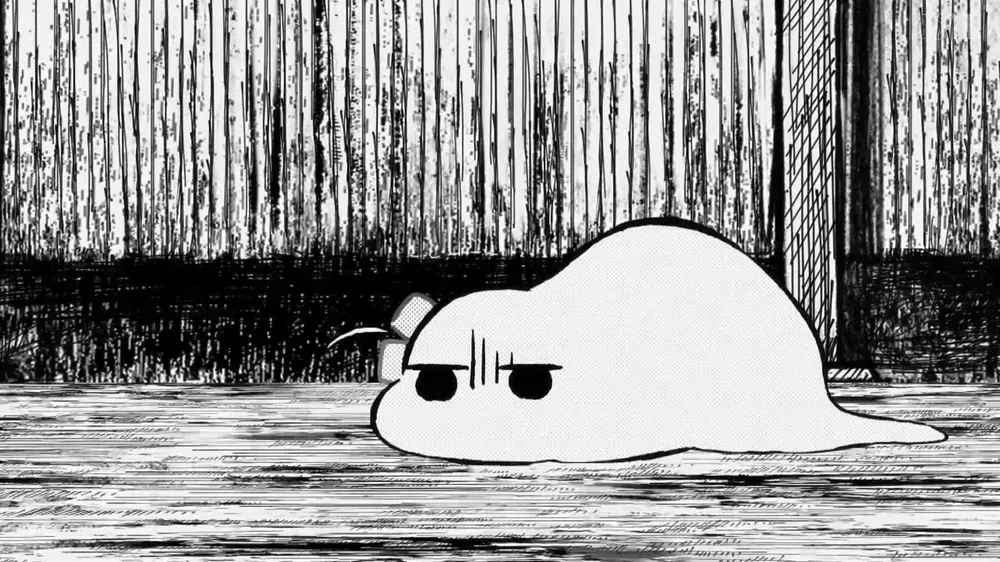
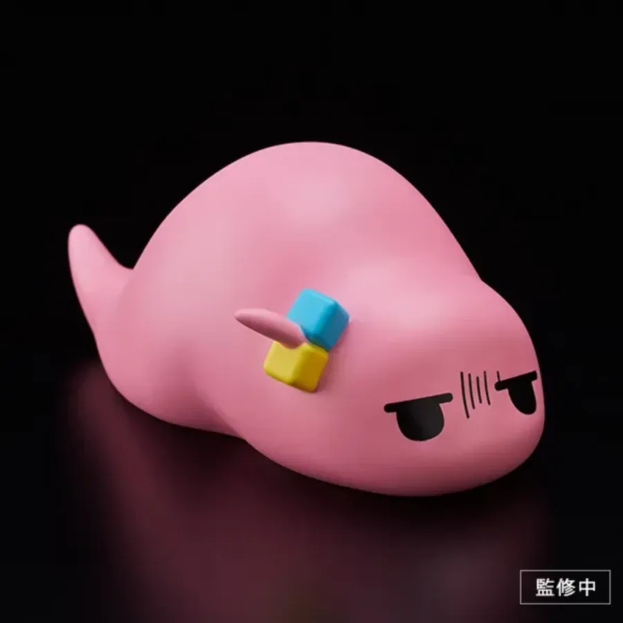
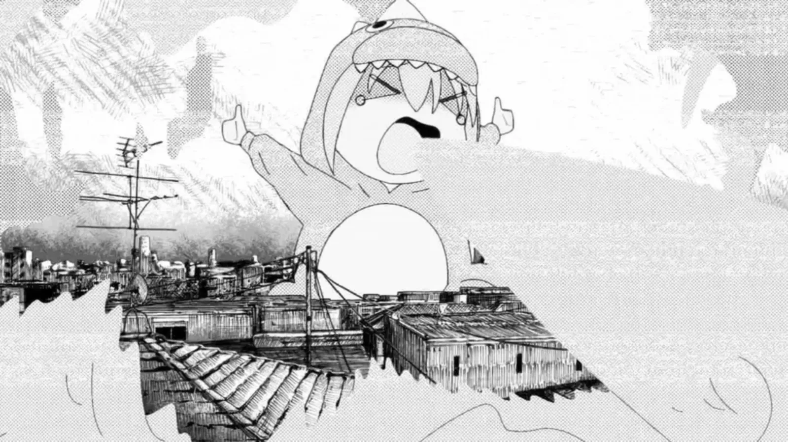
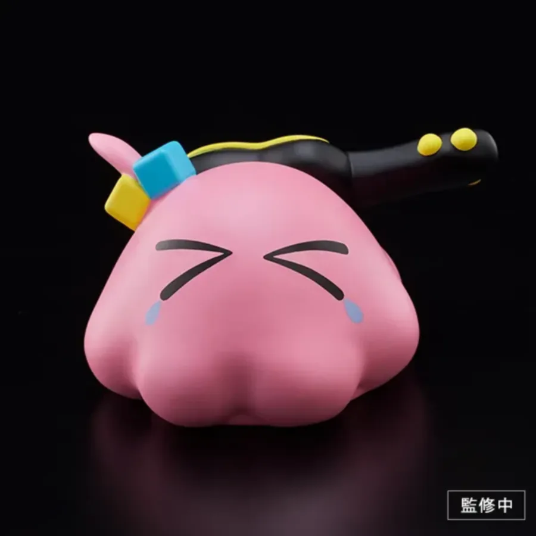
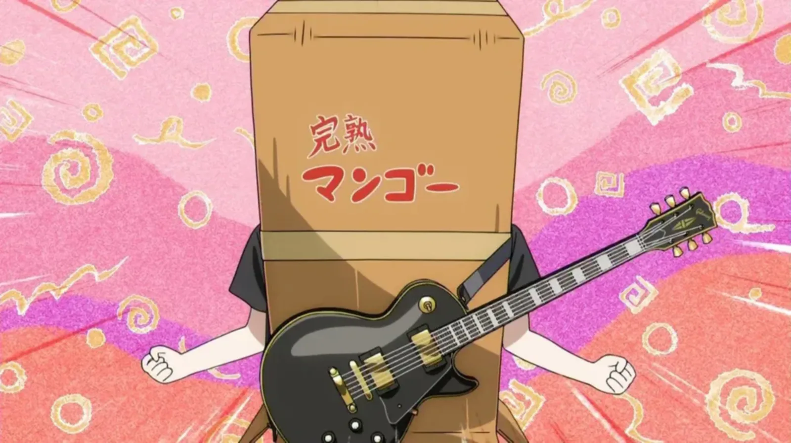

1. 개요
만화 《봇치 더 록!》의 주인공.
작중 주인공 팀인 결속 밴드의 리드 기타 겸 작사 담당이다.
성씨의 모델은 ASIAN KUNG-FU GENERATION의 보컬 & 기타리스트 고토 마사후미(後藤正文). 실제로 고토 마사후미의 솔로 활동명도 곳치(Gotch)다. 이름부터 대놓고 고토(後藤)다.
2. 특징
존재감이 옅고 심약한 성격인 데다 정말 심각한 수준의 대인기피증이라[5] 항상 외톨이로 지내온 소녀.
지독한 청춘 콤플렉스를 갖고 있으며, 이걸 자극받으면 '봇치 타임'[6] 상태에 빠진다. 봇치 타임이 과할 경우 얼굴 자체가 붕괴되는데 이때는 결속 밴드 멤버들이 나서서 복구한다. 가끔 실수해서 갑자기 다른 얼굴이 되기도 한다. 얼굴 복구 장인이 따로 없다(...) 이 봇치 타임은 사실상 이 만화를 다른 여고생 밴드물과 구분하는 핵심 정체성 중 하나로, 애니메이션에서는 기상천외한 연출로 봇치 타임을 거의 작품의 서브 장르급 킬링 포인트로 올려 놓았다.
거주하는 곳은 가나가와현 요코하마시 가나자와구의 동네인 카나자와핫케이(金沢八景)다. 작중 등장하는 히토리 집 근처 배경들이 실제 카나자와핫케이의 풍경과 일치하며, 작중 묘사상 시모키타자와 인근에 있는 듯한 슈카 고교와 대중교통 편도 2시간이면 얼추 들어가는 범위다. 이렇게 먼 학교에 오는 이유는 본인 과거를 아는 사람이 없을 것 같다는 히토리다운 이유였다. 당연하지만 대한민국에서는 학군 제도가 짱짱하게 있어서 이런 식으로 안드로메다 왕복급 장거리 통학은 불가능하다.(...)
참고로 애니메이션 7화에 나온 히토리의 집 모델이 된 주택은 가나자와 구에 실존하지 않는 것으로 알려져 있다. 니지카 & 키타가 히토리의 집에 찾아가는 과정에서 나온 자판기나 다리 등이 실존하기 때문에 그 근처 주택가에 있다는 설정으로 볼 수 있는데, 동일한 외견의 집이 없다고. 설정상으로만 존재하는 가상의 봇치 홈
2.1. 이름 및 별명
이름인 '히토리'는 '한 명', '혼자'를 뜻하는 일본어인 데다가 이름과 성의 순서를 뒤집으면 혼잣말을 뜻하는 일본어 '히토리고토(ひとりごと)'와 비슷해지기에 그야말로 온몸으로 아싸임을 외치는 이름이다.[7] 동생의 이름은 2명을 뜻하는 '후타리'다. 자매 이름이 일타리 이타리도 아니고(...)
일본에선 부모가 제정신으로 지었냐는 말이 나올 정도로 이상한 이름이라는 반응이 많다. 작중에서 대놓고 이름이 말장난이라고 언급된 키타 이쿠요보다 더 이상하게 들린다는 반응이 많다. 키타 이쿠요는 합쳐 놓으니 '왔다, 간다.'라는 말장난이 될 뿐이지 '키타'와 '이쿠요'는 실재하는 성과 이름인 반면 히토리는 대놓고 '혼자'나 '한 명'이라고 부르는 수준이라 도통 이름으로 안 들린다는 평이다. '한 명'이란 뜻까지야 한국의 하나처럼 비슷한 작명이 존재하니[8] 넘어갈 수도 있지만 '혼자'라는 뜻 때문에 대놓고 외톨이스런 이름으로 들리기 때문에 이상한 이름이란 평이 많다.[9] 부모의 조기 교육형 아싸 메이킹
다만 일본 팬덤에서도 특이하긴 해도 이름으로 못 쓸 정도는 아니라는 반박도 있긴 하다. 히토리라는 어감이 귀엽긴 하고[10] '이 세상에 한 명뿐인 아이'라는 뜻으로 생각하면 어떻게든 좋은 의미로 받아들일 수 있기 때문. 그러나 '두 명'이란 뜻인 고토 후타리는 거의 이견 없이 이상하다는 평가를 받는다.
본작의 제목에도 들어 있는 봇치(ぼっち)라는 별명이 있는데, 이는 외톨이를 뜻하는 '히토리봇치' 및 그 줄임말인 '봇치'에서 따왔다. 이는 결속 밴드 첫 공연 때 야마다 료가 지어준 별명인데, 아직 사람들 앞에 나설 준비가 안 되어서 완숙 망고 상자로 얼굴까지 가렸던 히토리를 위해서 니지카와 료가 가명을 쓰게 해 줬기 때문이다. 꽤 민감한 개인사를 건드리는 별명인데도 살면서 처음 생긴 별명이라 본인은 기뻐했다. 아싸 특: 별명이 아싸인데도 일단 생겼다고 싱글벙글함(...) 성씨의 모델이 된 고토 마사후미 역시 '곳치'라는 별명이 있다.
히토리를 봇치라고 부르는 사람은 이지치 니지카, 야마다 료, 이지치 세이카, 히로이 키쿠리, 우치다 유유 5명뿐이다.[11] 따라서 사용 인원으로만 따지면 의외로 사용률이 낮다. 사실 원작 3권까지만 해도 히토리의 교우 관계가 워낙 좁다 보니 이 정도면 꽤 높은 사용률이었지만, 그 뒤로 꽤 많은 캐릭터들이 추가되는데 봇치라는 별명을 불러주는 캐릭터는 더 추가되지 않아서 사용률이 상대적으로 떨어진 것이다. 하지만 주역인 결속 밴드 멤버들은 키타를 제외한 모두가 봇치라고 부르고 세이카와 키쿠리도 비중이 높은 캐릭터들이라서 불리는 횟수로는 굉장히 많다 보니 독자들에겐 매우 익숙한 별명이다. 한편, 약간 특수한 경우로 하세가와 아쿠비는 처음엔 봇치라고 부다가 6권에서 히토리가 아저씨 같은 이상한 말투로 문자를 보낸 뒤로는 아저씨를 뜻하는 '옷상'(おっさん)과 합쳐 '옷지'(おっぢ)라고 부르고 있다.[12] 여고생인데 아저씨 별명을 획득했다
히토리 본인은 봇치라고 불리고 싶어서 2학년 첫날 반에서 자기 별명이 봇치라는 소개도 해봤지만, 자기소개 내용이 너무 처참했던 탓에 아무도 제대로 들어주지 않아서 실패했다. 불쌍해요(...) 그래서 사사키 츠구코 등의 다른 급우들에게는 보통 '고토'라고 성으로 불린다.
TV 애니메이션 한국어 공식 자막에서는 '봇치'를 고유명사로 취급하지 않고 '외톨이'로 번역했는데, 이 번안에 대해서는 평이 갈리고 있다. 일본어 원문의 봇치가 그러하듯 상식적으로 외톨이는 사람 별명으로 쓰기에 적절하지 않은 것은 마찬가지지만, 봇치는 표준어가 아니라 상술한 대로 히토리봇치의 준말인 일종의 유행어이므로 표준어인 외톨이와는 뉘앙스 차이가 존재한다. 예를 들어 누군가에게 '아싸'라는 별명을 붙인다면 부적절하다는 느낌은 들겠지만 자조적으로 아싸를 자칭하는 사람들도 있으므로 본인이 괜찮다고 한다면 별명으로 쓸 수는 있을 것이다. 봇치도 이와 비슷한 뉘앙스라 볼 수 있는데 외톨이에서는 그런 느낌을 받기 힘들다. 이런 비판을 감안했는지 극장총집편은 만화판과 똑같이 극장총집편 봇치 더 록!으로 번역했다. 진작 이랬어야지 애니플러스 씨발련들아
다른 별명으론 오오야마 네네가 부르는 '히피 선배'(ヒッピー先輩)가 있다. 네네가 히토리를 처음 봤을 때 꼭 히피처럼 이상하게 차려입고 있었기 때문에 줄곧 이렇게 부르고 있다. 그리고 '기타 히어로'의 팬인 포이즌♡야미 및 Ame에게는 '기타 히어로 씨'라고 불린다.
2.2. 외모


평소엔 앞머리로 눈을 가리고, 항상 우울한 표정이라 얼굴에는 늘 그림자가 드리워져 있다.[13] 의상은 주로 분홍색 츄리닝을 즐겨 입는다.[14] 단벌 신사의 여고생 버전
위는 하늘색, 아래는 노란색으로 구성된 큐브 2개가 달린 머리끈을 오른쪽 머리에 늘 묶고 다닌다. 데포르메된 그림체에서도 이 큐브 2개는 절대 빠지지 않는 필수 요소. 봇치 타임에 빠진 상태일 시 이 큐브 2개가 얼음처럼 녹아 정신 상태가 불안하다는 걸 간접적으로 표현하는 장치로 쓰이곤 한다. 지금의 머리끈은 파란색과 노란색 정육면체 형태인데, 유치원/초등학교 시절에는 구, 별 모양이다. 다만 색깔은 똑같이 파란색과 노란색.[15]
음침한 성격과 괴상한 패션 센스, 이로 인한 평소의 태도[16] 때문에 잊히기 십상이지만, 작중에서 손꼽히는 미인이다. 평소의 우울한 표정을 지우고 등을 쫙 펴기만 해도[17] 작중에서도 확실히 예쁘다고 하며,[18] 이 상태인 히토리는 결속 밴드 동료들이 보기에 아이돌 그룹에서 비주얼 담당을 맡아도 될 수준이라고 한다.[19] 특히 진지한 표정이 되면 눈매가 날카로워져 잘생겨지고 쿨뷰티스러운 면모를 보여주기도 한다. 다만 성격과 기행이 이 사기적인 하드웨어를 완벽하게 봉인하고 있을 뿐
게다가 상당한 거유로, 결속 밴드 내에서 가슴이 가장 크다. 애니판에서는 작게 표현되었지만 원작 만화에서는 저지를 입은 모습을 통해 상당한 거유라는 걸 알 수 있다. 평소에는 저지에 가려져 있지만 원작에서 목욕하는 장면이나 수영복을 입은 장면 등을 통해 가슴이 매우 크다는 것을 알 수 있다.[20] 이 때문에 종종 가슴이 작은 니지카와 키타에게 질투를 사기도 한다. 애니메이션에서는 가슴 크기를 강조하는 장면이 대부분 삭제되었지만, 11화에서 야마다 료의 상상력으로 수영복 입은 히토리의 모습을 통해 히토리도 사실, 글래머한 몸매가 있다는 점을 보여줬다. 숨겨진 은둔형 굴곡의 소유자
결론적으로 귀여운 외모와 빼어난 몸매의 소유자로 실제로 작중에서도 귀엽다고 평가받는 미소녀인데, 성격에서 비롯된 기행과 자조 섞인 음울한 언행, 몸매를 전혀 부각시키지 않는 괴악하고 후줄근한 패션 센스 등등으로 이를 전부 묻어버린다. 한마디로 얼굴값을 전혀 못 하는 사람인데, 자세한 사항은 아래의 성격 파트에서 후술. 얼굴 그렇게 쓸 거면 나 줘라(...)
2.3. 성격
2.3.1. 대인기피증
고도의 대인기피증.[22] 가족이 아닌 사람과의 의사소통에 절망적인 수준의 문제가 있다. 타인에게 말을 거는 것은 물론이고 제대로 쳐다보는 것조차 어려워하며, 사람이 많은 곳에 가는 것도 엄청 거북하게 여긴다. 의견 제시도 제대로 하지 못해 남들이 부탁하면 우물쭈물하다 거절하지 못하는 패턴이 흔할 정도.[23] 앞머리를 기른 이유 또한 상대와 시선이 마주치는 걸 숨기기 위한 것이며, 가족이나 결속 밴드같이 친분이 있는 이들 외의 인물들과 시선을 정면으로 마주하면 사망한다나. 때문에 미용실에 가지 못해 어쩔 수 없이 머리를 기르고 있다. 같은 이유로 카페나 옷 가게에도 가지 못한다. 이쯤 되면 정상적인 일상생활이 가능한지가 의문인 수준이다(...)
이런 성격이 안 좋다는 걸 본인도 자각하고 있기에 어떻게든 고치기 위해 인싸가 되겠다며 위에 언급된 대로 록에 심취하고 기타 연습을 시작했지만, 나서지 못한 탓에 기타를 칠 줄 안다는 것도 아무도 모른 채 중학교를 졸업하고 말았다. 고등학교에선 다른 모습을 보여주겠다고 다시 기합을 넣었지만, 학교가 끝나면 연습 겸 유튜브 업로드를 위해 벽장에 틀어박혀 음악 활동만 하고, 학교에서도 유의미한 인간관계를 맺지 못하는 생활이 계속된다. 사실 급우들이 록 음악 이야기를 하면 끼려고 했다가 버벅이며 대화를 이어나가지 못했고, 점심 식사도 교실에서 하는 건 도저히 못하겠다며 남들의 시선이 닿지 않는 계단 밑에서 하고 있다.[24] 이렇다 보니 밴드 내에서는 기타 히어로로서의 실력이 제대로 나오지 않아 연주 실력이 부족하다며 평가 절하 되곤 한다. 방구석에서는 최강의 락스타지만 현실은 계단 밑 고구마녀
하지만 이와 반대로 기타를 꾸준히 잡는 모습에서 알 수 있듯 인정욕구는 매우 강하다. 니지카에게 이끌려 라이브 하우스에 갈 때도 망상으로 온갖 공연을 마치고 관중들의 환호를 받는 모습을 상상하며 혼자 히죽거린다거나, 조그마한 칭찬에도 얼굴에 다 드러날 정도로 헤벌레 웃으며 우쭐하기도 한다거나 하는 식으로. 기타 히어로로 계속 활동하는 이유 중 하나가 커버곡 영상에 달리는 팬들의 댓글이라는 점을 생각해 봤을 때, 겉으로 드러내지 못할 뿐 타인이 해주는 칭찬을 매우 갈구함을 알 수 있다.[25] 아예 마음 속 일면으로 고질라스러운 인형옷을 입고 좋아요를 갈구하는 '승인욕구 몬스터'가 묘사될 정도. 다만 타인의 주목을 구하기 쉬운 SNS와 관련해서는 이런 인정욕구가 쉽게 폭주하기도 한다. 트위터에서 인기를 끌고 싶은 마음에 기타 히어로 활동으로 들어온 수입의 대부분을 포스팅용 장비 구매에 탕진해 버린 전과도 있어 SNS를 하게 되면 사고를 칠 가능성이 있는 위험 인물 취급을 받는다. 좋아요에 지배당한 괴물
온갖 기행에 가려지지만, 하루 여섯 시간 이상의 기타 연습을 3년 넘게 계속할 수 있을 만큼 기본적인 성실함도 갖춰져 있다. 다만 그 성실성이 기타에서만 결실을 맺었다는 것이 문제. 학교 성적은 시험에서 0점을 맞을 정도로 절망적이지만 그것도 본인 딴에는 공부를 손에서 완전히 놓을 생각은 전혀 없었고, 수업도 열심히 듣고 시험 전에는 수업 내용 필기를 기반으로 열심히 공부를 해 왔던 상황이다. 결국 자기가 어느 과목이 약한지조차 자각이 없을 정도로 공부 요령이 없어서 낙제점을 맞는 것으로, 이쿠요가 공부를 봐 주자 언제나 한 자릿수였던 시험 점수가 낙제점을 간신히 넘길 수 있었다. 운동 신경이 없다는 묘사 역시 있으며, 그림도 그다지 잘 그리지 못하는 모양.[26][27] 그야말로 모든 능력치를 기타 연주에 올인해버린 극단적인 스탯창의 폐해
평소에는 멘탈이 극도로 약하지만 위기 상황에는 강한 모습을 보인다. 다른 사람과 어울리기를 힘들어함에도 가까워지고 싶어하는 자신에게 결속 밴드가 중요한 의미를 가지게 되었기 때문에, 그 밴드가 무너질 것 같은 순간이 오면 각성해서 밴드를 캐리하는 것. 평소의 대인기피증 & 기행 캐릭터와의 대비가 너무도 뚜렷하기 때문에, 농담 반 진담 반으로 '정말 중요한 순간에만 도움이 되는 캐릭터' 취급을 받는다.
한편 이러한 독특한 성격에서 비롯된 기행과 언행은 작품을 하드캐리하는 동시에 다른 여고생 밴드물에 대해 차별성을 부여하는 중요한 요소이다. 그야말로 이 작품의 아이덴티티나 마찬가지. 실제로 히토리와 비슷한 성격에 자신 있는 대목이 있음에도 불구하고 나서지 못하는 말 그대로 힘을 숨긴다고 생각하는 아싸들에게 미칠 듯한 공감과 압도적 지지를 받는다. 작품이 다루는 내용이나 대목이 소년 소녀 만화에서의 성장하는 주인공이 얻는 경험을 텔링하는데 이게 근본적으로 작가가 실제로 이런 성격인 게 아닌가 싶을 정도로 너무나도 적나라하다 보니 감정 이입이 안 될 수가 없는 것. 홍대병 환자들과 방구석 아싸들의 심장을 정확히 꿰뚫었다
단순히 독자들의 공감을 끌어낸다는 요소 외에도, 히토리의 이 극단적 아싸 기질은 다른 인물들의 성격을 보여주는 일종의 리트머스 시험의 역할을 한다는 점에서 작품 전체적으로 매우 중요한 기능을 한다. 다소 과장을 포함해서 말하자면 히토리 이외의 작중 인물은 '고토 히토리라는 비현실적으로 강렬한 개성'을 상대할 때 어떤 태도를 보여주는가를 통해서 독자에게 자신의 성격을 피로한다. 즉, 히토리의 극단적 캐릭터성은 본인뿐 아니라 다른 인물들의 성격까지 잘 눈에 들어오게 만드는 '원색의 배경' 역할을 하고 있는 셈이다.
원작에 비해 애니에서는 대인기피증이 비교적 순화되어 묘사된 편이다. 후술할 '봇치 타임'으로 대표되는 기행 묘사가 강화되어서 원작보다 대인기피증이 심해졌다고 받아들이는 의견도 많으나, 사실 '기행'을 하지 않는 평상시의 모습은 원작에 비해 많이 순화되었다. 원작의 봇치는 그야말로 시종일관 얼굴에 그늘이 져 있고 어깨가 구부정하며 정말 상대의 눈을 마주치는 장면이 없다시피 하는 등으로 위축된 모습인데 애니에서는 특별히 위축될 만한 상황이 아니라면 나름 번듯한 모습으로 그려지며 상대를 그럭저럭 똑바로 쳐다보는 장면도 많다.[28] 또한 원작보다 좀 더 적극적으로 나서거나 타인을 배려하는 대사가 늘어났고 원작에 있던 장면이라도 보다 적극성이 강화된 모습으로 나오는 장면이 많다.[29] 사실 기행이 강화된 것 또한 어떤 의미로는 대인기피증을 순화한 것으로 받아들일 수 있는데, 원작에선 기행을 벌일 때조차도 약간 위축된 느낌이었는데 애니에서 보다 기운차게 바꿔놓은 것이기 때문이다. 반대로 원작의 음침한 장면들은 빠지거나 순화되었다.[30] 단순 성격 묘사뿐만 아니라 원작에는 꽤 많았던 히토리의 서비스 신과 몸매 묘사도 애니에선 생략되거나 약화된 것으로 미루어 보았을 때 제작진 측에선 원작보다 대중성을 더 살리고자 했던 듯. 아니면 만화와는 달리 실제 사운드를 즐길 수 있는 애니메이션 특성상 밴드와 음악이라는 소재가 히토리의 강한 개성에 묻히는 것을 우려했을 수도 있다.
역으로 대인기피증이 애니메이션 연출상 적나라하게 드러나기도 한다. 무대를 그린 장면에서 물리적으로 한 발 물러서 있는 드럼이야 그렇다 쳐도 키타와 료 앞에는 마이크도 있고 두 사람의 얼굴에 하이라이트가 제대로 있는데, 봇치는 무대를 쳐다보지도 않고 대각선 쪽으로 어긋난 방향을 보고, 얼굴에 그림자도 진 데다가 마이크도 없고 키타와의 간격이 미묘하게 넓다. 동일성이 느껴지는 키타와 료에 비해서 따로 노는 느낌이 강하게 그려졌다. 원작에서는 해당 공연들에서 무대 전체를 그린 컷 자체가 없어서 비교된다.
비록 아주 조금씩이지만 대인기피증을 극복해 나가는 모습도 보인다. 라이브에서도 조금씩 관객들을 쳐다볼 수 있게 되었고 4권의 미확인 라이엇과 7권의 음반 발매 기념 라이브에선 자진해서 MC도 했다. 또한 7권에서 니지카와 요요코의 대학 합격을 축하하고자 거주지인 가나자와구에서 60km가량 떨어진 신주쿠까지 찾아왔는데, 너무 멀어서 안 불렀다며 당황하는 니지카와 키타에게 "이런 건 직접 말하는 편이 좋다고 생각해서..."라고 말해 니지카를 감격하게 만들었다. 장하다 우리 봇치짱
이런 성격은 엄마와 아빠, 동생과는 딴판인 성격인데 5권에서 할머니의 격세유전이란 언급이 있다. 여름방학 때 히토리가 할머니 집에 방문했다는 내용이 있는데 할머니가 게임을 준비했는데 늙은이가 젊은 척하는 것만큼 꼴불견이 없다면서 이 세상에서 사라지겠다(...)고 해서 니지카가 "격세유전이었구나..."라고 생각한다.
2.3.1.1. 봇치 타임
특유의 부정적인 사고와 대인기피증으로 인해 당황하거나 안 좋은 생각을 하게 되면 쉽게 빠져나오지 못하고 일종의 패닉 상태에 빠지는데, 이런 순간을 작중에서는 '봇치 타임'이라 부른다.[31]
히토리를 봇치 타임에 빠트리는 트리거도 다양하다. 미래에 대한 두려움, 다른 사람들과 마주해야 하는 상황에 대한 불안감, 알바를 하지 못하겠다며 장기밀매를 알아본다거나, 감기에 걸려서라도 빼고 싶어한다든지.[32] 게다가 히토리는 자신이 가진 인정욕구가 그동안 사회적으로 원만한 관계를 맺지 못했던 것에서 오는 반동이라는 것도 이해하고 있어, 더 나은 모습으로 변하고 싶은 자신이 엇나가면 어쩌나 하는 걱정까지도 히토리를 패닉에 빠트린다. 이따금 이런 부정적 사고가 피해망상 수준으로 발전할 때도 있어서, 점장이 단순히 관심을 가지고 자신을 지켜볼 뿐인데도 단단히 찍혔다고 생각하기도 한다. 이런 상황이 반복되다 보니 같은 결속 밴드 멤버들끼리도 히토리가 혼자 부정적인 생각에 사로잡히면 쩔쩔 맬 정도. 그럼에도 히토리가 스스로 자신을 바꿔야 한다는 욕구도 있고, 특히 자기를 받아준 밴드에 대한 애착이 강해서, 밴드 멤버들이 알게 모르게 자주 건드려서 생기는 봇치 타임에도 불구하고 뒤끝 없이 밴드가 유지된다는 것이 상당히 특이한 점.
원작 만화와 애니메이션 모두 이런 패닉 상태가 부담스럽게 받아들여지지 않도록 온갖 말도 안 되는 연출을 사용해서 개그 코드로 포장하는데, 봇치 타임을 이용한 개그가 밴드, 인간 성장 드라마와 더불어 본작을 구성하는 중요한 축이 된다. 히토리 마음 속의 방어기제가 상상친구 기타오라는 형태로 소소히 등장하고, 콘티 이하 수준으로 작화와 얼굴 표정이 무너지는 것은 예삿일이며, 아예 히토리가 인간으로서의 형태를 유지하지 못하는 연출도 잊을 만하면 등장한다. 본작 관련 트윗 등에서 보이는 '6.9', '6o9' 등의 표현이 바로 멘붕이 온 상태의 표정을 일종의 기호로 흉내낸 것이고, 인간 이외 형태의 레퍼토리도 츠치노코, 고질라 비슷한 괴수, 슬라임 혹은 포자, 두족류, 목제 인형, 즉신불 등으로 매우 다양하다.[33] 멘붕으로 망가진 히토리의 얼굴을 사포로 갈아 복원하는 광경을 밴드 멤버 외의 조연들이 보게 된다든가 하는 식으로 가끔 개그 연출과 (작품 내부의) 현실성의 경계가 무너지는 때도 있다. 그중 슬라임 형태의 변화는 한국 팬덤 한정으로 일명 응냨이라는 별명으로도 불린다. 응냨이형의 기원
애니메이션에서는 영상 매체의 특성을 이용해 봇치 타임에 빠진 히토리의 내면 묘사를 대폭 추가했다. 이 연출이 애니메이션판이 대중적으로 주목받게 된 여러 이유 중 하나로, 원작의 연출을 대폭 강화한 것은 물론, 실사 영상, 인형을 이용한 스톱 모션, 의미를 알 수 없는 CG 등을 적극적으로 개그 연출에 활용해 볼거리를 만든 것이다.[34] 이 가운데 비슷한 시기에 방영된 사이버펑크: 엣지러너와 유사한 연출들이 잇달아 발견되기도 했으며,[35] 특히 이소스타그램[36]을 해 볼 것을 권유받은 히토리가 거부반응을 보이는 장면이 크게 화제가 되었다.
2.3.1.2. 패션 아싸?
봇치는 단지 작화만 이쁜 게 아니라 작중 공인으로 귀염상에 몸매도 글래머한 미인으로 통하며 기타 실력도 뛰어남에도 불구하고 중증 아싸인 점이 대비를 이루게 되는데, 전자의 요소 때문에 수박 겉핥기 식으로 읽었거나 그게 아니더라도 농담 반 진담 반으로 '저 정도의 외모와 실력을 가진 사람이 아싸일 리가 없다.'라며 패션 아싸라고 평하는 경우도 있지만, 이는 히토리의 캐릭터성을 잘못 이해하는 사례다. 진짜배기 아싸의 무서움을 모르는 패션 아싸 판독기들의 헛소리
작중 묘사상 히토리는 확실하게 커뮤증이 존재하는데, 이는 객관적인 요인이 문제가 아니라 자신이 세운 이상과 현실의 자신을 비교하면서 스스로를 자학하는 기질 때문이다. 즉 히토리가 객관적으로 80점 정도의 인간으로 평균 이상이라 한들, 히토리 본인이 스스로의 커트라인으로 삼은 기준이 100점인 이상 히토리는 끝없이 스스로에 대한 자책을 이어나가는 것이 된다. 또한 객관적으로 우수한 면모를 가졌다고 정신병이나 대인기피증에 걸리지 않는 것도 아닌 게, 역사 속의 위인들은 물론이요 현실의 연예인들만 보더라도 업무나 사생활 등 다방면에서 받는 스트레스로 정신질환에 걸리는 경우가 잦고 극단적인 경우 이를 도피하기 위해 마약이나 음주에 지나치게 빠지는 경우가 적지 않다.
히토리는 '뭐든지 잘하는 멋짐 폭발 슈퍼스타'라는 자신의 이상에 대해 강한 동경심을 품고 있고, 이 때문에 사소한 일에 대해서도 재치 있고 완벽하게 해결해야 한다는 강박이 심하다. 문제는 성격이 소심해 남들 앞에 주도적으로 나서는 것 자체를 힘들어하다 보니 자신의 이상대로 멋지게 하기는커녕 무난하게 하는 것조차 못하고 십중팔구 망쳐버리는데, 이로 인한 수치심에 자신의 이상과의 비교로 인한 자괴감까지 겹쳐 아예 사람과의 대면 자체를 피하는 것으로 스스로의 이상을 인식할 일 자체를 피하는 것이다. 어떻게 보면 비대한 자의식에 한참 못 미치는 미성숙한 자아와 타고난 소심함이 폭발적인 시너지를 일으켜 생겨난 대인기피증인 것. 무력감이나 열등감을 근간으로 하는 계열의 아싸와는 애초에 거리가 먼 캐릭터이다.
한마디로 소심한 관종이라는 말이 딱 어울리는 캐릭터로, 사람들이 자신을 싫어할 거라는 믿음으로 인해 강박적인 자기혐오를 가진 대부분의 아싸형 캐릭터들과 달리 히토리의 대인기피증은 그저 자기 자신에게 만족하지 못하기 때문에 생기는 것이다. 멋지고 대단한 사람이고 싶은 욕심 + 그러지 못하는 소심함 + 하지만 그걸 극복할 용기는 없음 + 그렇다고 적당히 포기하고 타협하기엔 비대한 자의식이라는 해괴한 조합이 봇치라는 캐릭터를 만들어낸 것. 복잡하기도 해라
실제로 작중에 드러나는 내면 묘사를 보면 히토리는 자신이나 타인에 대한 평가가 나름 정확한 편이다. 스스로의 외형에 대해서도 자신이 '멋짐'과는 거리가 먼 귀염상이라 외형에 자신감이 없는 것이지 스스로 못생겼다고 평가한 적은 없고, 주변에 시달리면서도 나름대로 인물평은 제대로 하는 편이다. 물론 만화 캐릭터이기에 당연히 어느 정도 과장과 모에화가 들어가긴 했지만,[37] 큰 틀에서는 비현실적인 캐릭터라고 보기 힘들다. 특히 이런 성향인 사람들은 자기 자신에 대한 높은 기준을 만족시키기 위해서 노력을 많이 하기 때문에, 능력자가 많은 경향이 있어서 히토리의 기타 실력 또한 자연스럽다.
현재의 귀여운 캐릭터 디자인을 가지고 외모에 대해 열등감을 느끼는 장면이 나온다든지, 현재의 기타 실력을 가지고서도 스스로의 능력을 한심하다고 비관한다든지 하는 장면이 나왔다면 여지 없이 기만적인 패션 아싸 캐릭터였을 것이다. 하지만 작중에서 키타와 료를 비롯한 주변 인물들이 히토리의 외모를 귀엽다고 대놓고 말하고 있으며, 본인도 딱히 이를 부정하지 않는다. 기타를 사람들 앞에서 치는 걸 꺼리는 이유도 자신의 기타 실력이 떨어진다고 여기는 게 아니라 어떻게든 멋지고 화려하게 치고 싶은데 긴장해서 제대로 치지도 못하고, 그런 모습이 쪽팔려서 연주가 더 말리는 악순환 때문이지 본인의 실력에 대한 열등감 같은 것은 한 번도 보여준 적이 없다.[38]
또한 본인의 이상과는 다르지만, 작중 시작 시점에서도 히토리는 나름대로 학교에서 유명인사로 통한다. 본인은 맨날 계획과 준비를 끝마쳐놓고 정작 실행을 못해서 본인이 외톨이라고 여기지만, 상술한 대로 외형부터가 이쁜 사람이 맨날 민무늬 분홍 츄리닝을 걸치고 다니며 가끔 커다란 기타까지 보란 듯이 메고 돌아다니니 이런 인물이 유명하지 않다면 그건 그것대로 이상한 일일 것이다(...).[39] 거기에 문화제에서 기가 막힌 기타 연주 후에 얼척없는 점핑까지 하니 관심받을 만한 요소로 무장하긴 했으나 특유의 대인기피증이 그걸 다 말아먹고 있는 것. 그리고 시란이 넘치는 관객석으로 뛰어내려 다이빙 자살 퍼포먼스를 완성했다(...)
아싸라는 설정을 비현실적으로 느끼게 만드는 진짜 원인은 외모와 실력보다는 성장 배경 쪽이다. 이 정도로 자존감이 낮아지려면 가정 환경이 암울하거나 학교에서 집단괴롭힘을 당하거나 인생에 큰 좌절을 겪는 등의 트라우마가 있기 마련인데, 히토리는 아주 행복하고 밝은 가정에서 자랐고 과거에 특별한 트라우마가 있다는 묘사도 없이 그냥 천성적인 성격 탓에 아싸였다는 설정이다.[40] 심지어 같은 환경에서 자란 여동생 후타리는 완전 인싸로 자라났기에 더욱 이상하다. 여기에 상술했듯이 외모와 능력 면에서도 딱히 좌절을 느낄 이유가 없다 보니 왜 히토리의 자존감이 이렇게까지 낮아졌인지 원인이 오리무중이라 독자들이 납득하기 힘들였던 것이 '패션 아싸' 의혹까지 이어졌다고 볼 수도 있다. 작중에선 격세유전이라는 말로 이 설정을 만화적 허용으로 적당히 넘어가고 있다.
굳이 히토리의 성향을 설명해야 한다면 천성적인 내향적이고 부정적인 기질이 중학교 시기의 사춘기와 결합하여 극대화되었고, 한창 또래와의 대인관계가 중요한 시기에 가족 외의 대인관계를 만들지 못해 그 돌파구로 기타를 선택했으나 하루에 연습만 8시간 해댄 만큼 정작 중요한 바깥 생활을 등한시해 3년 동안 끊임없이 악순환이 이어졌다는 쪽이 적절할 것이다. 유전적 요인+사춘기+본인의 실책에 운까지 따라주지 않은 셈이다.
이와 같은 가정환경의 비현실성은 작가도 인정하고 있다. 단행본 5권 특전 캐릭터 파일 vol.10에 실린 고토 미치요의 캐릭터 설정 코멘트에서 밝히길, 사실 평범하게 생각한다면 히토리 같은 아이는 어렸을 때 부모님에게 칭찬받거나 긍정받은 경험이 별로 없어야 하겠지만, 연재 초기에는 캐릭터 설정이나 성장 배경을 제대로 생각해두지 않았기 때문에 지금과 같이 딸을 엄청나게 칭찬해대는 가정이 되었다고 한다. 결과적으로 만화가 너무 어둡지 않게 되어서 다행이라고 생각하지만, 만약 지금 설정을 만들었다면 엄청 어두운 가정으로 설정했을 거라고. 힐링물이 될 뻔했다가 피폐물이 될 뻔한 비하인드 스토리
2.3.2. 외유내강
겉으로 굉장히 소심하고 소극적인 모습이고 실제로도 그런 성격이지만, 막상 일이 벌어지고 나면 의외로 굳건한 의지와 냉정함을 보여주는 외유내강 캐릭터이기도 하다.
보기와 달리 속으로 생각이 굉장히 많고 판단이나 분석에 뛰어난 편이며, 멤버들과 만담을 나누는 동안에도 습관적으로 무언가를 분석하고 있다. 이런 면모는 애니판에서 보다 강화되어서, 원작에선 그냥 지나갔던 장면에서도 히토리가 속으로 냉정하게 태클을 걸거나 상황을 분석하는 장면이 많아졌다.
이런 내면의 비판적 분석은 대체로 굉장히 날카롭고 정확한 편으로, 평소에 겉으로 보여주는 모습과는 완전히 딴판이다. 개그 연출 속에 슬쩍 지나가는 분석이라 대수롭지 않게 생각하기 쉽도록 연출되지만, 대부분이 정곡을 찌르는 비판들이다. 때로는 고조된 분위기 속에 물을 끼얹듯 불안감을 느끼며 문제를 찾아내기도 하는데, 이런 히토리의 속 생각들은 매우 적중률이 높은 편이라, 진짜로 현실이 되기도 한다.
일이 잘 풀린다 싶어 그 분위기에 휩쓸리면서도 속으로는 뭔가 잘못되고 있다 느끼고 그것이 결국 현실이 되곤 하니, 지나치게 신중하고 걱정 많은 성격이 형성되었다. 이것은 히토리의 대인기피증과 자존감 부족, 우유부단함에 있어 심각한 과대망상 못지않게 큰 원인이 되는 점이기도 하다. 특히, 이러한 걱정 많은 성격은 자기 자신에 대한 과도한 회의감을 유발해서 하던 일을 그만두고 싶게 하는 충동을 일으키는 부정적 영향을 끼친다.[41]
하지만 이런 민감하고 날카로운 분석력 덕분에, 평소의 똥촉(?)과 대비되게도, 소셜 미디어광 키타도 미처 찾지 못한 포토 스팟을 찾아내는 등 보기보다 감이 아주 뛰어나 남들이 찾아내지 못하는 것을 찾아내는 재주가 있다. 그리고 이렇게 남들이 찾아내지 못한 것 중에는 밴드 멤버들이 미처 드러내지 못한 내면의 문제들도 있었고, 그렇게 찾아낸 게 밴드를 위기로부터 구하는 결정적 계기가 되기도 한다. 설령 당장은 그것이 자신이 문제를 찾아낸 게 아니라 자신에 대한 고민을 하던 것이었더라도 그렇다.
보통 밴드의 조후가 무너지지 않게 적절히 딴지를 걸어주는 역할은 니지카가 하는 편이지만, 겉으로 드러나지 않는 잠재된 문제에 대해서는 히토리가 찾아내 내면에서 딴지를 걸고, 그것을 니지카가 알아차리고 대응해 주는 형태로 밴드 내면에 누적되는 잠재적인 갈등을 해소하는 아주 중요한 역할을 한다.
예시로, 밴드의 오디션을 앞두고 "나는 과연 성장하고 있는 것이 맞을까? 이대로 밴드가 마냥 흘러가는 게 맞을까?"라고 고민하는 히토리의 생각을 파악한 니지카가 자신의 포부를 밝히며 히토리의 흔들리는 마음을 붙잡을 수 있었다.
비록 이 생각은 자기 자신에 대한 자신감 부족에 의해 시작한 것이었고, 1차적으로는 히토리 자신의 의지를 다지기 위한 고민으로 마무리되었으나, 히토리 스스로가 일어서지 못한 상태로 그냥 흘러가게 둘 수 없을 만큼, 곧, 결속 밴드는 무언가 재난이 발생할 때 그걸 견딜 만큼 결속되어 있지 못한 상태였기도 했다.
모두가 부족했던 결속 밴드였지만, 히토리가 이때 그냥 분위기에 취해 두루뭉실하게 넘어가지 않고 밴드의 불안으로부터 자신의 문제를 비춰 보고 고민하였기에, 그리고 그것을 니지카가 풀어주었기에, 히토리는 마음을 다잡을 수 있었고, 그 덕분에 히로이라는 기연으로부터 많은 것을 배울 수 있었을 뿐만 아니라, 이 모든 경험을 바탕으로, 후술되듯, 결국 밴드를 위기에서 구해내는 결정적 계기를 얻게 되었다.
한편, 히토리는 평소에는 어떤 결정도 내리지 못하고, 뭔가 잡은 일도 얼마 못 가 그만두고 멘탈이 탈주해 봇치 타임에 빠지거나, 겉으로 드러나지 않은 숨은 번뇌에 빠져 버리는 우유부단 탈주왕[42]이지만, 일단 하기로 작정한 일은 절대 물러서지 않고 기어코 끝장을 보는 엄청난 추진력을 속에 감추고 있다. 3년 동안 매일 6시간 기타 연습을 계속하는 것부터가 어지간한 의지로는 절대로 할 수 없는 일이다.[43]
이런 묘사는 애니메이션에서 특별히 강조된 것을 넘어, 원작에서도 꾸준히 등장하는 묘사인데, 원작 2권 속표지 만화에서 후타리가 히토리에게 기타를 배워 보려다가 금방 지쳐서 그만두고, 이런 걸 계속하는 언니는 굉장하다고 말하는 장면이 있다. 일단은 "이런 걸 계속 하면 후타리는 외톨이가 되어버릴 거야..."란 푸념이어서 히토리가 기뻐하지 못하는 개그씬이긴 하지만, 히토리가 F코드를 튀겨온 것이 분명 대단한 일이라는 걸 원작에서도 확실히 짚고 넘어간 장면이다. 외톨이가 되는 지름길 독학 기타
또한, 친구를 잘 사귀지 못하지만, 모처럼 생긴 친구들을 굉장히 소중히 여기며, 자신을 위한 일보다도 친구들을 위한 일에 훨씬 진지해진다. <기타와 고독과 푸른 행성> 오디션 라이브 신과 <그 밴드> 라이브 신에서 분발하는 장면이 대표적인데, 이때 히토리가 분발한 이유는 자신을 위해서가 아니라 결속 밴드를 이대로 끝내고 싶지 않다는 일념 때문이었다.
그리고, 이러한 히토리의 숨은 내면이 태풍이란 천재지변 앞에 기껏 결성된 밴드가 어처구니없이 무너질 위기에서 밴드를 구해냈다. 니지카의 포부, 곧 어떠한 계기로 인해 자신은 반드시 밴드를 하고 싶다 한 그 이야기, 히토리 자신처럼 하루 종일 F코드를 튀기며 고생해 온 키타, 초심을 잃은 밴드에 실망해 떠돌다 겨우 머무를 자리를 찾은 료, 그들 모두의 이야기가 이렇게 끝나는가 싶을 때, 결속 밴드를 구해낸 것은 방구석 벽장 속에서 3년 내내 기타를 튀겨온 외톨이였던 것이다. 진정한 방구석의 신
물론 이러한 활약은 히토리가 이름처럼 혼자였다면 불가능한 것이었다. 혼자서는 자기 성찰 능력이 매사 부정적으로만 생각하고 일을 너무 빨리 그만두어 그르치는 우유부단함으로 이어져 왔고, 결심한 때에만 물러서지 않는 반쪽짜리 뚝심으로 무엇을 하든 일을 그르치며 점점 위축되어 고립되어 왔던 히토리였다. 하지만, 밴드라는 결속하에서는 그러한 약점을 완화해 줄 친구가 있었고, 히토리를 고독으로 몰아넣던 통찰의 과잉과 불완전한 뚝심이 온전한 강점으로 뒤바뀌게 된 것이다. 히토리가 생각하던 "원맨 기타 히어로"의 페르소나는 작품 초반에 완전히 청산되고,[44] 자신에게 어울리는 "밴드맨"으로서의 히어로로 자신의 서사를 재구성하게 된다. 마치 혼자 별이 될 수 없으니 대신 별자리가 되고 싶다는 가사처럼.
평소에 주눅 든 모습만 보이는 만큼, 반대로 각성했을 때의 임팩트가 큰 캐릭터. 평소에는 그냥 먼지 수준의 상태로 비실대는 듯한 모습과 달리, 한번 일을 벌이게 되면 무지막지한 추진력으로 기어코 무언가 엄청난 것을 이뤄내는 대기만성형 "밴드 히어로"인 셈이다.[45]
겉보기와 달리 의외로 굉장히 생명력 있고 굉장히 강인한 속 성격을 가지고 있는 모습은, 전술한 진지한 모습들 외에, 일상의 개그 장면들에서도 확연히 드러난다. 예를 들어, 벌레에 대한 내성이 엄청나서, 레이블에 거미가 출현했을 때 맨손으로 잡아서 밖으로 풀어주는 일반적인 미소녀 고교생[46]은 시도도 못 할 위업(?)을 달성한다거나,[47] 사회 관계를 제외하면 딱히 무서워하는 것이 없어, 남들은 다 무서워하는 유령이나 으스스한 상황에도 거의 면역 수준이라 아예 꿈쩍도 안 한다.[48] 오히려 유령이 히토리의 몰골을 보고 무서워할 지경. 결속 밴드의 담력 시험에서도 히토리는 전혀 놀라는 기색이 없자 키타가 의아해하는데, 귀신의 행동 양식이 자신과 별반 차이가 없고 오히려 귀신과 동질감(!)을 느껴 딱히 무서워하지 않는다며 그간 보여준 반응 역시 애니메이션과 같이 그냥 주변에서 비명 지르는 게 무서워서 같이 비명을 질렀을 뿐임을 밝힌다. 평소 별 대단치 않은 것에 겁먹는 반면에 일반적으로 사람들이 무서워하는 걸 안 무서워한다. 귀신: (히토리의 음침한 기운을 보고 도망치며)
하지만 이런 강인한 속 성격과는 별개로, 본 실력을 내지 않는 평소에 겉으로 보여지는 기백은 명백히 빈약을 넘어선 참혹한 무언가의 경지에 있다. 이것도 은근 뼈 때리는 개그 씬으로 자주 활용되는데, 대표적으로, 뭔가 야생동물들이 무리지어 등장하면 십중팔구 기가 참 약해 보이는 히토리에게 냅다 달려들어 탈탈 털어먹는 장면으로 이어지는 게 있다.
2.4. 기타 히어로
화려하고 남들에게 주목을 받기 쉽다는 지극히 속물적인[49] 이유로[50][51] 일렉트릭 기타를 배우기 시작했으며, 중학교 1학년 시절부터 3년간 매일 6시간 이상 꾸준히 독학으로 연습한 결과 본편 시점에서의 연주 실력은 작중 최정상급에 들어가는 수준이라 평가된다. 그와 동시에 아버지의 권유로 OH! TUBE에서[52] 『기타 히어로(ギターヒーロー)』란 이름의 채널을 개설해 인기곡 기타 커버 영상 등을 올리며 인기몰이를 하고 있는데, 이것이 그녀의 숨겨진 정체성 포지션을 맡고 있다.[53]
기타 히어로 채널은 작품 시작 시점(고등학교 1학년 1학기)에 이미 구독자 3만 명, 2권 후반부 시점(1학년 2학기)에는 거의 8만 명, 3권 중반 시점에는 약 9만 명 정도,[54] 4권 권두 컬러 특별편에서는 구독자 10만 명을 돌파한 것이 확인되며 나름대로 좋은 평과 조회수를 기록하며 잘 나가는 중이다. 심지어 밴드 활동을 시작한 이후로 새로운 생활에 적응하느라 정신이 없어 반년 가까이 동영상을 업로드하지 못했음에도 꾸준히 구독자가 늘어난 것이다. 소위 말하는 알고리즘의 간택과 장인정신의 승리
히토리 본인은 이런 채널을 만든 게 처음인 데다가 아버지 도움도 받다 보니 이 채널의 계정 권한이 고토 家 전체 명의로 승인되어 있는데, 본인은 말 그대로 영상을 올리고 관심받는 용도로만 여겼기에 영상 업로드나 댓글 확인 외에는 별다른 활동을 하지 않았는데 그렇기에 나오키가 본인의 채널에 광고 수익을 신청해 둔 것도 몰랐다. 광고 수익이 언제부터 얼마나 쌓였는지 정확한 바는 밝혀진 바 없으나 히토리가 새 기타를 구할 때 광고 수익만으로 30만 엔이라는 거금을 지불할 수 있는 수준이었으니 수년간 최소 30만 엔가량은 벌었음을 알 수 있다. 다만 기타 히어로 채널은 유행가 커버 영상만 올린다고 하는데, 현실에서는 저작권 있는 곡의 커버 영상은 수익을 얻지 못하기에 현실성은 부족한 설정. 당장 국내에서 커버곡 위주로 영상을 많이 올린 나코코가 조회수 300만이 넘는 영상도 예상 수익은 달랑 6원 정도라고 언급한 적 있다. 실제로 애니 가이드북 인터뷰에서 작가 하마지 아키가 "'연주해 봤다' 같은 연주 동영상의 세계는 잘 모르지만..."이라고 언급한 적이 있기 때문에, 작가가 유튜브 수익 구조에 대해 잘 모르고 쓴 실수로 추정된다. 다만 광고 수익 신청을 아빠가 해줬다 보니 저작권 관련 문제를 나오키가 어찌어찌 해결해 줬을 가능성도 없잖아 있다.
다만 인터넷에서만 활동하는 사람의 한계로 인해 음악에 관심 있는 등장인물 중에도 기타 히어로에 대해 원래 알고 있던 사람은 별로 없다. 원작 기준으로 확실히 알고 있던 사람은 사실 니지카, 포이즌♡야미, Ame 3명뿐이고, 여기에 히토리의 독주를 듣고 어디서 들어봤다고 하므로 아마 알고 있었을 세이카를 포함해도 4명. 애니에서는 료도 원래 알고 있던 걸로 나오지만 원작에선 키타와 함께 야미에게 들어서야 알았다. 그 밖에 팬 1호 & 팬 2호, SIDEROS 멤버들, 시바 미야코 등도 전부 작중에서 다른 사람에게 듣고 알게 되었다. 10만 유튜버라면 유튜브 업계에서야 최상위지만 현실에서 아는 사람을 우연히 만날 정도의 인지도는 결코 아니기에 이는 자연스러운 상황이다.
하지만 문제는, 오로지 3년 동안 주야장천 독주만 해온 탓에 합주 경험이 전무해서 정작 밴드 기타리스트로서의 실력은 빵점이라는 것과, 관객과 눈도 못 마주칠 정도로 심한 대인기피증 때문에 무대에서 제 실력이 안 나온다는 것이다. 그 탓에 대부분의 사람들은 기타 히어로의 정체가 고토 히토리란 사실을 알아채지 못하고 있다. 연주 실력에 대한 자세한 내용은 '음악 실력' 문단 참고.
기타 히어로와 히토리가 동일 인물인 것을 작중에선 세이카가 독주를 하는 걸 보고 가장 먼저 눈치챘고,[55] 이후 두 번째 라이브를 끝내고 니지카 역시 주법과 테크닉이 유사하다는 이유로 알게 되었으며, 2권에서 포이즌 야미가 스태리에 찾아왔을 때 역시 주법과 테크닉을 통해 깨닫고는 대놓고 말한 탓에 결속 밴드 및 그 주변인들에게 정체가 탄로 나게 된다. 니지카는 '이게 만화라면 내분 끝에 밴드가 해산되어도 이상하지 않을 정도의 이야기'라며 걱정하지만, 이 시점에 와서는 료나 키타 모두 히토리가 평범한 기타리스트가 아니라는 사실 정도는 다 눈치채고 있었기 때문에 진실 자체에는 크게 신경 쓰지 않았다.[56] 히토리가 말하지 않는 것을 굳이 캐물으려 하지 않았을 뿐. 다만 포이즌 야미의 폭로와 지적으로 인해 자신들의 수준이 히토리가 낼 수 있는 진짜 실력을 전혀 따라가지 못하고 있다는 사실을 직면하게 된다. '결속 밴드의 고토 히토리'로서 다 함께 성공하고 싶은 히토리 역시 '기타 히어로로서의 고토 히토리'의 네임 밸류만이 인정받는 상황을 두고 힘들어한다.[57]
기타 히어로로 투고할 때는 남자친구도 있고 친구도 많은 핵인싸 코스프레를 하고 있는데, 주변에 정체가 알려지고 난 다음엔 관두고 간단한 글만 남기고 있다. 하지만 니지카는 업로드한 영상의 연주자가 맨날 츄리닝만 입고 있고 주변도 살풍경하다 보니 허세라는 걸 다들 진즉에 눈치채고 있을 거라고 생각했다. 기타 히어로를 첫 투고부터 봤던 최고참 팬인 Ame가 말하길 첫 투고 때부터 딱 봐도 이상했다고 한다. 히토리의 실상을 아는 아버지 역시 딸의 동영상을 보면서 날이 갈수록 늘어가는 허세에 마음이 아팠다고 한다. 기타 히어로에게 콩깍지가 씐 포이즌♡야미만 직접 히토리를 만나기 전까진 믿고 있었다. 그러다 주변에 정체가 밝혀진 이후에는 이 허세가 싹 사라졌다. 넷카마나 넷인싸나 그게 그거지 뭐
이렇듯 라이브 중엔 평소보다 상당히 형편없는 기타리스트임에도 불구하고 기타 히어로라는 걸 귀가 밝은 사람이라면 어렵지 않게 알아차리는 걸 보면 버릇이 상당히 강하게 든 모양이다.[58] 사실 히토리처럼 악기를 처음부터 독학으로 배우면 버릇이 없을래야 없을 수가 없다. 악기 선생의 가장 중요한 역할 중 하나가 나쁜 버릇이 들 때 지적해 주는 것인 만큼 현실적으론 연주자로서의 수명을 단축시킬 수도 있는 치명적인 버릇이 안 생긴 게 다행이다.[59] 니지카는 '절도 있는 스트로크'를 꼽았고 야미는 '노래하는 듯한 비브라토'를 꼽았으며, 그 외에도 몇 가지 버릇이 있는 모양. 요요코 역시 실력은 완전 딴판인데 가끔 보이는 버릇이 분명 고토 히토리라고 한다. 물론 이 언급을 한 시점이 고토 히토리에게 다른 명의의 채널이 존재한다는 것을 요요코가 이미 알고 있는 시점이긴 하다.
기타 히어로 채널의 엄청난 인기는 뛰어난 실력과 3년 이상에 걸친 꾸준한 투고 덕분도 있지만, 유행하는 밴드라면 장르를 가리지 않고 전부 커버 영상을 올리는 덕분이기도 하다. 이걸 들은 오오츠키 요요코가 "그 여자는 프라이드도 없는 거야...?!"라고 경악하고, 나레이션으로 당당히 없다라고 나오는 게 압권. 또한 별의별 태그를 다 달아서 유튜브 알고리즘 노출도를 올리고, 시청자들의 리퀘스트도 적극적으로 받는 등으로 은근히 현실적인 전략을 쓰고 있다. 하지만 역시 가장 큰 성공 요인은 실력이라고 작중에서 직접적으로 언급된다.
또 대단한 점은 히토리가 기타에 막 입문했을 때부터 거르지 않고 투고했다는 것. 처음엔 가장 기본인 튜닝조차 못할 정도로 형편 없어서 조회수도 거의 안 나왔고 그나마 보는 사람들에게도 비웃음만 샀다. 그럼에도 그만두지 않고 매일 투고했고, 조금씩 실력이 늘면서 조회수가 늘기 시작해 현재의 유명세에 이르게 된 것이다. 아싸 특유의 똥고집이 빛을 발한 순간
히토리가 애니 1기 감독인 사이토 케이이치로는 히토리가 이렇게 기타에 열성적이면서도 정작 곡에 대해서는 철학 없이 유행가만 치는 것에 대해 '록을 좋아하지만 특정 아티스트를 동경하는 것은 아닌 것 같다. 표현 수단이 기타밖에 없기 때문에 사회에 인정받는 것으로 울분을 발산하는 것. 기타는 좋아하지만 곡에는 집착하지 않는다.'라고 분석했다. 이 발언은 애니 1기 가이드북에 수록된 원작자 하마지 아키와의 공동 인터뷰에서 나온 건데, 원작자가 별 반대를 하지 않은 걸 보면 어느 정도는 동의하는 해석일 것이다.
기타 히어로 활동 덕분에 '기타'와 '유튜브'에 관해서는 엄연한 전문가라서, 좀처럼 자기주장이 없는 히토리가 그 두 가지에 한해서는 의견을 종종 말하고는 한다.
만약 히토리와 기타 히어로가 동일인이라는 사실을 공개하고 기타 히어로 계정을 이용해 결속 밴드를 홍보한다면 밴드의 인기에 큰 도움이 되겠지만, 히토리 본인을 포함한 결속 밴드 멤버들은 그 방법은 절대 쓰지 않는다. 왜냐면 히토리가 결속 밴드에서 기타 히어로의 실력을 낼 수 없는 현재 상황에서 기타 히어로 계정을 이용하는 것은 결속 밴드 본연의 힘이라 할 수 없기 때문이다. 따라서 언젠가 결속 밴드에서도 본래 실력을 발휘하게 되었을 때 ‘고토 히토리=기타 히어로’임을 공표하기로 마음먹고 있다.
그렇지만 결속 밴드의 활동이 썩 순탄하지만은 않은 상황 속에서 현실적으로 떨쳐내기 어려운 유혹이다 보니, 히토리가 지금이라도 기타 히어로 계정으로 결속 밴드를 홍보해야 하나 고뇌하는 장면이 가끔가다 등장한다. 하지만 7권에서 첫 음반 발매 기념 라이브가 대박을 치면서 더 이상 결속 밴드의 인지도가 기타 히어로에 비해 꿀리지 않을 상황이기에 앞으로는 그런 고민도 별로 하지 않게 될 듯하다.
2.5. 패션
패션 센스가 최악이다 못해 그냥 없는 수준. 이유는 당연하게도 심각한 대인기피증으로 도저히 옷 가게에 들어갈 수가 없어서(…)다. 제발 인터넷 쇼핑으로 옷을 사라 그 탓에 항상 분홍색 츄리닝만 입는 단벌 미소녀.
그나마 중학생 때까지는 교복이라도 제대로 입고 다녔는데 고등학생이 된 후로는 교복조차 제대로 안 입고 하의에 대충 교복 치마만 덧입은 핑크 트랙수트 단벌 차림으로 다니고 있으며, 그나마 결속 밴드에 들어오면서 알바나 공연을 하느라 하의만 정상적(?)으로 입는 게 전부이고, 상의로 입은 트랙수트는 공연을 하느라 밴드 셔츠를 입을 때를 제외하면 항상 똑같이 입고 다니고 있다.
헤어스타일 역시 눈이 가려지기 직전의 긴 앞머리와 허리에서 엉덩이까지 내려가는 긴 기장의 장발을 늘 하고 다닌다. 디자인을 추구한 헤어스타일이라기보단 막 기르고 방치한 결과물인데 이유는 이것 역시 대인기피증으로 미용실을 아예 못 가기 때문이다. 블루클럽조차 갈 수 없는 중증 커뮤증 환자
어머니 고토 미치요가 히토리에게 어울리는 여러 가지 예쁘고 귀여운 옷들을 사주고 있지만, 정작 그게 히토리의 취향이 아니라서 입지 않는다. 정확히는 귀여운 옷을 입어서 눈에 띄는 걸 싫어한다. 수학여행 에피소드에서, 키타와 사사키 츠구코는 보통 화려한 기모노 하면 생각나는 복장 중 하나인 후리소데를 대여받아 입었지만, 히토리는 그런 귀여운 옷을 입고 눈에 띄고 싶진 않다면서 어디서 갖고 왔는지 모르는 신센구미 기모노를 대여받아 입었다.
히토리는 단순히 귀찮아서 옷을 안 차려 입는 것이 아니라, 자신의 외모를 드러내는 것에 거부감을 가지고 있다.[60] 억지로 히토리의 외모를 드러내려 하면 파멸적인 결과로 이어지기 십상이다. 예시로 니지카와 키타가 밴드 의상을 정하자는 명목으로 히토리의 집에 찾아왔을 때, 히토리에게 귀여운 옷을 입혀보고 귀엽다며 난리였지만, 더 귀엽게 만들어 주려고 히토리의 엉망인 앞머리를 들어올린 순간 히토리는 봇팡이가 되어 흩어지고, 니지카와 키타는 봇팡이를 흡입하여 기절해 버렸다. 인간형 생화학 가스 유포 병기
그저 부담스럽다고 귀여운 옷을 거부하는 것만은 아니고, 애초에 히토리의 취향이 귀여운 것보다는 멋있는 것 쪽이기도 하다. 히토리는 평소부터 패션에 관한 것만이 아니라 일상 전반에 귀엽다는 말보다는 멋있다는 말을 훨씬 많이 사용하고 훨씬 열정적인 반응을 보인다. 귀여운 후리소데보다 신센구미 기모노를 더 마음에 들어한 것도 이런 취향 때문이다. 4권 해수욕장 에피소드에서 키타와 니지카가 강제로 귀여운 수영복을 입혀놓으니 수수하다면서 침울해 할 정도로 귀여운 옷엔 관심이 없다.
그나마 히토리가 "챙겨 입은" 차림새라 해 봐야 교복+츄리닝 점퍼+니 삭스 조합이 전부이며, 이것조차 밴드 활동을 하다 보니 어쩔 수 없이 입게 된 것일 뿐, 원래는 학교에서도 전신 트랙수트에 교복 치마를 대충 덧입은 차림으로만 다녔다. 밴드 활동 때문에 스태리에 갈 일이 없을 때는 이것조차도 안 입고 그냥 트랙수트에 교복 치마가 전부이며, 밴드와 놀러 나갈 때도 치마조차 안 덧입은 통짜 트랙수트 차림으로 나가는 경우가 많다. 드물게 다른 옷도 입기는 한데, 기껏해야 집에서 입는 스웨트 셔츠나 반팔 셔츠 정도가 전부이며, 분위기로 따지면 항상 입는 트랙수트와 별 차이가 없다.
교복+츄리닝 점퍼+니 삭스 조합은 실제 일본 여고생들도 종종 입고 다니는 복장이지만, 작중 히토리가 교복이랍시고 전신 츄리닝 위에 교복 치마 하나 딸랑 걸친 채로 로퍼를 챙겨 신는 것은 그야말로 엽기적 + 패션 테러라고 평하는 독자들이 많다. 어쩌면 극도의 커뮤증으로 인해 학교 생활 자체를 흑역사의 현장으로 여기는 반감이 작용한 것일지도 모른다.
그래도 교복 치마+츄리닝 바지 조합은 고토 히토리의 상징적인 패션임은 틀림없다. 망가타임 키라라 전시회에서도 다른 키라라 주인공들과 다르게 히토리만이 교복 치마+츄리닝 바지 패션을 보였다. 의외로 상의는 흰색 프린팅 반팔이어서인지 총체적인 패션이 제법 괜찮으면서 히토리답다.
히토리가 늘 입고 다니는 스타일의 트랙수트를 일본에서는 촌스럽다는 이미지를 담아 '고구마 저지'(芋ジャージ)라 부르고 있다. 정확히는 단색에 흰 선이 그어진 스타일의 츄리닝(#)이다. 그런 옷만 입고 다니는 자신도 고구마녀(芋娘/이모온나)라고 자조적으로 칭하는 경우가 있다.
커뮤증을 빼고 봐도, 봇치는 패션 센스 자체가 파멸적이다. 밴드 티셔츠 디자인 에피소드 때 히토리의 도안을 본 키타는 속으로 '중2병 걸린 남자애' 같다고 생각했고, 바닷가 에피소드에서도 매장 직원이 골라준 예쁜 수영복은 안 입고 인터넷으로 산 해괴한 옷을 입었다. 이 외에도 만화나 애니메이션을 통틀어 드문 평상복 가운데 'ROMAN'(로망) 'USIDAZE MO-MO-'(소라구 음머 음머), 'NO MORE GAKKO'(NO MORE 학교), 'Chusei shibo'(중성지방) 등 슈르한 글귀가 적혀 있는 옷이 많다. 여고생 티셔츠에 당당히 새겨진 '중성지방'의 위엄(...)
파멸적인 패션 센스를 보면, 오히려 커뮤증 때문에 단벌 미소녀 수준에 그친 셈이다. 커뮤증이 없었다면 그야말로 적극적인 패션 테러리스트가 되어서 기상천외한 온갖 막장 패션을 보여줬을지도 모른다. 커뮤증이 패션계에 끼친 유일한 순기능
얄궂게도 소심하고 귀도 얇은 히토리가 그나마 자기주장이 확고한 몇 안 되는 영역이 이 구려 터진 패션 센스라 본인이 바라는 인싸 라이프에 또 다른 지장이 된다. 신학기마다 기타를 메고는 이런저런 락덕후 아이템을 주렁주렁 착용하고[61] 등교하는 것도 본인은 멋있다고 생각해서 누군가 말을 걸어 주리라 기대하기 때문. 물론 주변 반응은 '위험해 보이니 건들지 말자' 취급이지만, 스스로 자기 센스에 대한 자각이 없는 탓에 다음 학기면 또 재도전하는 비극의 루프 상태다.[62]
키라라 잡지 표지나 다른 중요한 판촉용 보자로 그림은 중요한 그림이므로, 여기서는 어지간해서 히토리 또한 옷을 정상적으로 입는다. 키라라 MAX 2023년 10월호 표지에서는 유카타도 잘 입고 있고, 키라라 MAX 2022년 10월호 표지에서 스타일리시한 패션을 선보였다.
7권 수학여행 에피소드에선 히토리가 패션으로 호평 받으며 인기를 끄는 내용이 나온다. 상술한 대로 귀여운 기모노를 입기 싫다며 어디선가 신센구미 기모노를 빌려 입었는데, 여기에 사사키가 최강 느낌을 내자며 목도 두 자루를 채우고 뺨에 십자 흉터까지 그려놓았다. 그 모습으로 기타까지 치고 다니니 외국인 관광객들이 '기타 사무라이'라고 부르며 사진을 찍어달라고 인산인해를 이뤘다. 일본인들이 보기에는 오버하는 컨셉충 패션이었지만 외국인들이 보기에는 그들이 원하는 자포니즘 스타일 자체였던 것이다. 이걸 보고 사사키는 히토리에겐 월드와일드한 인기가 있다고 평했으며, 키타는 히토리에게 패션으로 인기가 밀렸다는 사실에 충격 받아서 수학여행 이후까지 히토리와 똑같은 물건들을 수집하고 다녔다. 내수용 고구마 저지가 수출용 월드와이드 기타 사무라이로 진화하는 기적
3. 작중 행적
📖 상세 내용 보기: 고토 히토리/작중 행적4. 인물 관계
🤝 상세 내용 보기: 고토 히토리/인물 관계5. 사용 장비
5.1. 일렉트릭 기타

애니메이션 5화에서의 모습
1968 Gibson Les Paul Custom
기타에 첫 입문한 중학교 1학년 시절부터 본편 초반까지는[63] 아버지 고토 나오키의 소장품인 깁슨 1968 레스폴 커스텀 리이슈를[64] 사용했다. 봇치 더 록!의 인지도를 확 끌어올렸던 애니메이션 내내 이 기타를 사용하는 데다, 작중에서 히토리에게 갖는 의미와 비중이 꽤나 크기 때문에 팬들 사이에선 봇치 기타라는 이명으로 불리기도 한다.[65]
헤드 쪽 데칼로 미뤄 보아 1968년에 생산된 오리지널 레스폴 커스텀 혹은 해당 모델의 리이슈(복각 재발매) 모델이라는 쪽으로 후보군이 좁혀졌는데, 후자 쪽일 가능성이 크다. 한편 바디에 크랙이 있는 등 어느 정도 레릭이 되어 있다는 언급이 있어 깁슨 커스텀 샵의 머피 랩 라인업을 통해 출고된 제품이 아닐까 하는 추측도 있었지만, 후에 나오키가 젊었을 때 약 50만 엔을 주고 구입했다는 언급이 나오기에 크랙은 인위적인 레릭이 아닌, 세월의 흐름에 따라 자연스럽게 생긴 것으로 보인다.[66][67] 참고로 원작 만화에서는 헤드스톡의 모양과 데칼이 깁슨 원본과는 살짝 달랐는데, 애니메이션 1기에서는 일본 깁슨의 라이센스를 받았는지 헤드 스톡의 모양은 물론이고 데칼과 특징적인 스플릿 다이아몬드 인레이 및 깁슨 로고까지 진퉁 레스폴 커스텀의 그것 그대로 묘사되었다.
1968년식 레스폴 커스텀은 두꺼운 마호가니로 된 바디에 메이플 탑[68]을 올려 제작되는 바디와 마호가니, 에보니 지판으로 만든 넥을 접합하여 제작되며, 사용한 목재들의 음향학적 특성 덕에 재즈부터 블루스, 하드 록, 메탈까지 커버할 수 있는 빈티지하고 밸런스가 좋은 따뜻한 톤을 내어 준다. 픽업 또한 해당 장르들에 최적화된 PAF 험버커 픽업 두 개를 장착하여 힘 있는 배킹 사운드부터 밀도 있는 솔로 톤까지 내어 줄 수 있다. 사운드 데모
다만 대부분의 레스폴 모델은 깁슨제, 에피폰제 할 것 없이 기타 연주자들 사이에서도 여러모로 불친절한 일렉기타로 악명이 높으며,[69][70] 깁슨 커스텀답게 헉 소리나는 가격과 상대적으로 까다로운 관리 보수 때문에 여러모로 기타를 관리한 경험이 적은 10대 소녀가 쓰기엔 좀 과한 기타라는 평이 많다. 무거운 중량과 불편한 연주감만 감안한다면 특유의 두껍고 쭉쭉 뻗는 소리가 록 장르에서 가지는 위치는 매우 독보적이기에 아주 매력적인 기타임은 분명하다. 다만 레스폴이 아무리 범용성이 넓다곤 해도 작중 결속 밴드가 연주하는 모던한 팝 록, 인디 록 성향의 곡들에서는 적합한 사운드를 내어 주지 못할 수 있으므로[71] 그러한 장르에선 아래의 야마하 퍼시피카 같은 상대적으로 모던한 음색의 기타가 더욱 어울리는 편이다.
1968년식 레스폴 커스텀은 1960년대 초, 제조사인 깁슨이 라이벌 모델이었던 펜더의 스트라토캐스터 때문에 판매고를 겪자 후속작 위치에 있던 SG를 밀어주고 이 과정에서 모델명에 본인의 이름을 사용하도록 해준 기타리스트 레스 폴과의 법적 문제 등을 이유로 아예 생산을 중단했다가[72] 하드 록, 헤비 메탈에 적합한 새로운 사운드를 찾던 당대 기타리스트들(지미 페이지, 피터 그린, 에릭 클랩튼 등)이 단종된 레스폴을 재발굴하면서 이들의 요청으로 1968년부터 50년대 오리지널 레스폴을 재생산하기 시작하면서 이참에 당시 요구 사항에 맞춰 스펙을 개선한 신형 레스폴 커스텀 모델이다. 하지만 당시 기타리스트들은 동시기에 복각된 P-90 픽업이 장착된 1950년대 초 스타일의 레스폴 스탠다드 골드 탑을 험버커 픽업이 장착된 신규 모델들보다 선호한 탓에 68 커스텀은 상대적으로 다른 레스폴 커스텀 연식들(1954년식, 1957년식, 1974년식 등)에 비해 인기도 저조했고, 특별히 즐겨 사용했었던 유명한 구미권 기타리스트도 거의 없다. 이런 이유로 68 레스폴 커스텀 리이슈는 관점에 따라선 진짜 '봇치 기타'라고 해도 될 정도로 봇치가 가장 유명한 사용자인 셈이다.
한편 레스폴 커스텀은 아래에 언급될 사건으로 고장 난 이후 히토리가 새 기타를 사용하게 되면서 등장이 없다가 원작 6권에서 세이카 생일 기념 스태리 초청 라이브에서 원주인 고토 나오키가 과거 밴드 동료들과의 협연에서 사용하며 재등장했다.
애니메이션 1기 방영 기념으로 성우 아오야마 요시노가 실제로 일렉트릭 기타를 배우는 코너인 『기타 히어로의 길(ギターヒーローへの道)』이 진행되는데, 여기선[73] 에피폰 버전 레스폴 커스텀을 사용하고 있다. 관련 영상
실제로도 히토리의 레스폴은 시그니처 모델이 깁슨이 아닌 에피폰의 Inspired by Gibson 시리즈로만 출시됐다. 2023년 200대 한정판으로 12만 8천 엔에 한 번 발매되었고, 2025년 100대 한정판으로 22만 엔에 한 번 더 발매되었다. 2023년 버전은 'Inspired by Gibson Les Paul Custom', 2025년 버전은 'Inspired by Gibson Custom Les Paul Custom'으로 2025년 버전이 상위 라인업이다. 헤드 쉐입도 2023 버전은 에피폰 헤드, 2025년 버전은 깁슨 헤드이다.

애니메이션 12화에서의 모습 (좌우반전)
YAMAHA PAC611VFMX[74]
이후 최신 연재분 시점까지 쭉 메인 기타로 사용 중인 건 야마하 퍼시피카(Pacifica)이다. 슈카 고등학교 문화제 라이브 때 레스폴의 헤드 및 튜너가 파손되어 당분간 사용이 어렵게 되었다는[75] 사실을 알게 된 아버지 나오키가 "기타 히어로"의 광고 수익 저축분의 일부인 30만 엔을 새 기타 마련하는 데 쓰라며 줬고, 이 중 약 10만 엔 정도를 소비해 구입했다.[76]
공개 당시 야마하에서 상시 판매되고 있는 퍼시피카 모델들 중 히토리가 구입한 것과 동일한 색상과 스펙을 가진 모델은 없었기 때문에 많은 사람들이 PAC611 모델들 중 하나일 거라 예상했고,[77] 이후 작가가 야마하 PAC611 시리즈를 기반으로 창작한 기타라고 공식적으로 언급했다.[78] 단 애니메이션에선 제조사를 돌려 말하지 않고 야마하라고 똑바로 말하는 것을 보면 상표 사용 권리는 제대로 취득한 모양. 야마하에서는 고토 히토리 퍼시피카 611VFM를 특별 주문 사양으로 커스텀 모델이라고 하였고, 12화 방영 직후 봇치 시그니처 모델 퍼시피카를 이벤트를 통해 두 명의 당첨자에게 증정했다. #
야마하 퍼시피카는 두껍고 빈티지한 톤을 자랑하는 깁슨 레스폴과는 다르게 넥 픽업으로 시모어 던컨 SP90-1[79], 브릿지 픽업으로 시모어 던컨 커스텀 5 험버커를 장착해서 기본 S-H 구성으로 되어 있어 가벼운 모던 음악에서 헤비한 록, 헤비 메탈까지 소화할 수 있다. 거기에 브릿지의 험버커는 코일 스플릿을 작동시켜 싱글 코일 픽업과 비슷한 소리를 낼 수도 있기에 전에 사용하던 레스폴보다는 범용성이 더 넓어진 것이 특징.[80] 여러 부분에서 기존에 사용하던 레스폴 커스텀보다는 결속 밴드의 컨셉에 잘 매칭되는 악기이다. 사운드 데모
여담으로, 퍼시피카 구입 후 남은 20만 엔은 비상금으로 아끼고 있다가 소셜 네트워크 서비스에 중독된 영향으로 조회수 및 좋아요를 많이 찍고 싶다는 욕심에 기타 이펙터를 수십 개 지른 탓에 달랑 21엔만 남고 탕진해버렸다.[81]
5.2. 기타 앰프

애니메이션 2화에서의 모습
YAMAHA THR5
2화에서 아르바이트를 피하려고 감기에 걸리기 위해 선풍기 앞에서 맨몸에 수영복만 입고 거기에 쿨패치들을 덕지덕지 붙인 채로 기타 연습을 할 때 옆에 있던 앰프는 야마하의 THR5 기타 앰프이다.[82]

애니메이션 5화 「ギターと孤独と蒼い惑星」 라이브에서의 모습 (사진 좌측)

애니메이션 1화에서의 모습 (사진 우측)
Marshall JCM900 / Roland JC-120
작중 라이브 장면에서 주로 사용하는 기타 앰프는 마샬의 JCM900 4100이며, 함께 사용된 캐비넷은 같은 회사의 1960A 캐비넷으로 추정된다. 라이브 카페 연습실에서 연습, 합주를 하는 장면에서는 롤랜드의 JC-120으로 보이는 앰프도 함께 놓여있으나 라이브 장면에는 따로 등장하지 않으므로, 연습에만 사용했거나, 사용하지 않았을 수도 있다.
5.3. 그 외

애니메이션 1화 中 Steinberg UR22
그 외에도 오디오 인터페이스와 노트북을 사용하여 레코딩을 하는 장면도 나왔는데, 오디오 인터페이스는 Steinberg의 UR22,[83] DAW는 GarageBand이며, # 노트북은 Apple의 MacBook Air로 보인다.[84]

애니메이션 1화 中 AKG K240 MKII
동시에 레코딩용으로 사용 중인 헤드셋은 AKG사의 스튜디오 모니터링 헤드폰인 K240 MKII로 보인다.

애니메이션 12화 문화제 라이브에서의 페달보드
12화 문화제 라이브에서는 페달보드를 사용하는 장면도 묘사되었는데, 대략이나마 식별 가능한 것들만 추려 보면 각각 Dunlop의 Crybaby GCB95나 VOX의 V845 중 하나로 추정되는 와우 페달, BOSS의 MS-3 멀티 이펙트 스위쳐, ProCo의 RAT 디스토션 정도로 보인다. 그 외에 흰색 유닛은 Custom Audio Japan의 AC/DC Station Ver.2 파워 서플라이로 보이며, 애니메이션 8화에서도 등장한 바 있는 파란색 이펙터는 BOSS의 BD-2 블루스 드라이버이다. 다만 묘사가 다른 이유는 특유의 디자인이 상표 등록이 되어 있는 관계로 애니메이션에서는 똑같은 디자인을 쓸 수 없었다고 한다.[85]#

망가타임 키라라 MAX 2019년 4월호 표지
망가타임 키라라 MAX 2019년 4월호 표지에서는 좀 더 많은 이펙터와 장비들을 볼 수 있는데, 상단부터 Eventide Audio의 H9 Max 하모나이저, Strymon의 BigSky 리버브, 거의 잘려서 잘 보이지 않지만 MXR의 M102 Dyna Comp 컴프레서, VOX의 V847 와우 페달, BOSS의 BD-2 블루스 드라이버, YAMAHA의 CH-01 코러스 페달이다. 기타 앰프는 Marshall의 JCM 2000 Dual Super Lead 100 앰프 헤드[86]와 1960A 캐비넷의 조합이며, 기타 스트랩은 Fender의 모노그램 스트랩 (Black/Light Grey/Dark Grey 색상)이다.

단행본 3권 36화 표지 그림
원작에서 묘사된 페달보드는 애니메이션 1기에서 나온 것과는 차이가 얼추 있는 편이다. 우측부터 시계 방향으로 Dunlop의 Crybaby GCB95 와우 페달, Ibanez의 TS 미니 오버드라이브, Dunlop의 EVH 5150 오버드라이브[87], Custom Audio Japan의 AC/DC Station VI 파워 서플라이, 그리고 TC Electronics의 Flashback 1 딜레이/루퍼[88] 순이다.
6. 음악 실력
- 포이즌♡야미, 2권 24화
매일 6시간 이상 연습해서 이젠 프로 수준까지 올라왔고, 노력파에 천재야.
- 고토 나오키, 3권 32화
작중 언급들을 종합할 때 히토리의 솔로 기타 실력은 프로 수준이라고 묘사된다. 인디 밴드 전문 칼럼니스트인 포이즌♡야미는 기타 히어로가 이미 프로로 통용된다고 단언하며, 밴드맨 출신인 히토리의 아버지 고토 나오키 또한 히토리를 프로 수준이라고 언급한다.
여기에 더해 기타를 사용하는 곡예 주법도 대부분 가능한 것으로 보인다. 문화제 라이브 때 줄 끊어짐+헤드 머신 고장이라는 돌발 상황이 터지자 멘붕해서 연주를 멈췄다가 키타의 애드리브로 약간의 시간이 확보된 상황에서 즉석에서 보틀넥 주법을 시전해 위기를 넘긴 것이 대표적 사례. 2권 수록 외전을 보면 그 밖에도 이빨로 연주하거나[89] 등 뒤로 연주하는 등의 묘기도 부릴 수 있다고 한다.[90] 한마디로 기타 실력 하나만큼은 완성형 주인공이라고 해도 무방한 레벨.
- 기타오
하지만 문제는, 오로지 3년 동안 주야장천 독주만 해온 탓에 합주 경험이 전무해서 정작 밴드 기타리스트로서의 실력은 빵점이라는 것과, 관객과 눈도 못 마주칠 정도로 심한 대인기피증 때문에 무대에서 제 실력이 안 나온다는 것이다.[91] 실제로 처음 합주를 했을 때는 히토리의 연주를 들은 모든 사람이 이제 막 기타를 잡은 사람이라고 생각했다. 그렇지만 꾸준한 연습과 실전 경험으로 라이브에서도 점차 제 실력을 발휘하게 되어가는 중이다. 4권 미확인 라이엇 라이브에서는 야미가 '다른 3명의 연주가 기타 히어로의 연주를 받쳐 주는 느낌이 되었다'라고 평하며, 관객들에게도 큰 호응을 얻었고 오오야마 네네는 이때부터 히토리를 동경하여 밴드맨을 꿈꾸게 되었을 정도다. 이 시점에서는 확실히 결속 밴드의 중심으로 자리 잡은 모양이다. 다만 얼마 후 매니저 시바 미야코가 기타 히어로와 동일인물임을 공개해서 홍보에 쓰자고 제안하자, 야미가 '아직 결속 밴드에서의 고토 히토리의 실력이 기타 히어로와 너무 차이가 나기 때문에 사람들이 안 믿을 거다'라며 막아주는 것을 볼 때 아직 100% 실력 발휘에는 이르지 못하고 있다. 좀 더 시간이 지난 6권 시점에서도 SIDEROS의 어려운 프레이즈를 한 번 듣고 익혀서 요요코와 바로 합을 맞추는 바람에, 요요코가 "이 프레이즈를 칠 수 있는데 왜 그 모양이야! 일부러야?"라고 열받아하자 "긴장해서..."라고 설명하는 걸 보면 여전히 라이브 중에 제 실력을 발휘하지 못하고 있는 상황이다.[92]
작중 언급으로는 하루 6시간씩 3년간 꾸준히 독학으로 연습한 실력이라고 하는데, 이는 실제로 이 캐릭터의 모티브 격인 히라사와 유이와[93] 비교하면, 만화적 과장이 어느 정도 있을지언정 말도 안 되는 수준은 아니다. 당장 히토리의 아버지부터가 연주와 작사 등에 어느 정도 재능 있는 기타리스트였고, 이걸 물려받고 필사적으로 노력했다 친다면 작중 같은 프로 수준은 아닐지라도 인디 밴드 현역에서 뛰고도 남을 실력은 나온다.
대신 혼자서 독학으로만 배운다면 잘못된 습관이 박히고[94] 합주에 문제가 생길 수 있다는 문제점이 생기는데, 작중에선 히토리가 합주를 못하는 문제를 제대로 묘사했다.[95] 그리고 단행본 5권 특전 캐릭터 파일 vol.10에 따르면 히토리가 기타에 매진할 수 있던 데는 아버지 고토 나오키의 어시스트 덕분이 크다고 하므로, 아버지가 히토리에게 잘못된 연주 습관이 박히지 않도록 기초를 잡아줬을 가능성이 높다.[96]
연주 경력이 긴 만큼 음악 관련 지식도 웬만큼 있으며, 커버 영상을 만들기 위해 인스트루멘탈로 편곡하는 작업도 해봤기 때문에, 작곡과 편곡을 할 수 있는 지식도 갖추고 있다. 하지만 기술만 있을 뿐이고, 아이디어를 곡으로 정리하기 위한 요령을 갖추지 않아서 혼자 곡을 완성할 능력은 없다. 항상 유행가 커버 연주만 했지 자신만의 곡을 만든 적이 없어서 편곡의 경험도 음악 철학도 없고, 쉽게 극단적으로 빠지는 성향 때문에 곡의 밸런스와 연주 난이도를 고려하지 않고 아이디어를 마구 쑤셔 넣는 데다가, 자신감이 없어서 완성을 못 하고 끝없이 수정을 해대는 탓이다. 5권의 편곡 에피소드에서 료가 평가하기로는 작곡 관련으론 아이디어만 따지면 기발한 것이 많아서 채용할 만하다고 한다. 하지만 편곡 쪽으로는 일절 재능이 없는지 “시대가 히토리의 편곡 재능을 따라잡지 못한다.”라며 에둘러 전력 외 취급한다.
한편 애니판의 삽입곡 퀄리티를 바탕으로 히토리의 연주 실력을 분석하는 시도도 종종 보이는데, 이는 참고용 혹은 재미로만 볼 필요가 있다. 삽입곡은 상업성을 위해서 작중 설정과 무관하게 무조건 최고의 퀄리티로 나와야 하므로, 삽입곡이 작중 히토리의 실력을 있는 그대로 반영하지는 않기 때문이다. 그나마 본작은 작곡가가 가능한 한 작중 설정을 음악에 반영했다고 언급한 바 있지만 그래도 한계는 있다. 애니판의 삽입곡으로 판단하면 히토리는 모든 라이브에서 프로 수준의 실력을 발휘하고 있으나, 작중에서 히토리는 애니 1기 최종화의 문화제 라이브에서도 제 실력을 거의 발휘하지 못하고 있다는 것이 공식 설정이다. 그렇기 때문에 그 '기타 히어로'와 동일인물이란 사실이 들통나지 않고 있는 것이다. 따라서 히토리가 분발해서 제 실력을 발휘했단 묘사가 있는 5화 오디션 라이브 후반 장면, 6화 노상 라이브 후반 장면, 8화의 <그 밴드> 라이브 장면, 12화의 보틀넥 주법 이후 장면 정도를 제외하면 삽입곡의 훌륭한 퀄리티와 다르게 실제로는 별로 뛰어난 연주가 아니었단 설정으로 봐야 한다. 히토리는 그나마 본 실력은 프로라는 설정이 있으니까 나은 편이고, 아예 초보자인 키타의 경우는 대놓고 제작자들이 작중 설정과 다르게 연주는 잘 했지만 마스터링 처리로 합이 묘하게 안 맞는 연출을 해뒀다고 언급한 바 있는데, 이에 대해서는 키타 이쿠요 문서의 '음악 실력' 문단 참고.
7. 인기 및 전적 [편집]
국제 사이모에 리그(ISML) 여성부 준우승 (2023, 2024, 2025)
Best Girl Contest 8강 (2024)
Bilibili Moe 16강 (2025 classic)

ISML 캐릭터 사전 NO.23 - 고토 히토리
사실 작품 방영 전까지만 해도 결속 밴드 4인방 중에서 그녀의 인기가 넘사벽 수준으로 폭발할 것이라 예측한 사람은 거의 없었다. 하지만 같은 분기의 엄청나게 쟁쟁한 경쟁작들 사이에서 《봇치 더 록!》이 제작진의 약빤 연출에 힘입어 예상을 훨씬 웃도는 대성공을 거두고 명백한 분기탑에 올라서자 상황은 완전히 달라지기 시작했다. 그러면서 오타쿠에게 상냥한 갸루 붐을 불러왔다고 평가받는 1분기의 키타가와 마린과 함께, 4분기의 봇치는 아이돌물 - 밴드물 헤게모니 교체의 선봉장으로 떠오를 만큼 가장 최근(2022년)의 심야 애니메이션 최전성기를 상징하는 투톱 히로인 중 하나로 당당히 자리 잡았다.
또한 2020년대 초반부터 단순히 착해 빠진 메가데레 성향의 여캐들은 대세에서 점점 물러나고, 대신 비상한 능력을 숨기고 있으면서도 다루기 쉬운 성격의 찐따류 여캐들의 인기가 급상승하기 시작했는데, 고토 히토리는 그 트렌드에 가장 완벽하게 맞아떨어지는 서식지의 대장 격 존재였기에 전 세계 오덕들의 주목[97]을 한몸에 받으며 데뷔와 동시에 모에 토너먼트(모토) 판의 강력한 컨텐더로 떠올랐다.
공교롭게도 이때의 인기투표 형세는 상당히 혼란스러웠는데, 정확히 말하면 《그 비스크 돌은 사랑을 한다》 방영 시점부터 확장기(2019~2021년)를 지배하던 고인물 캐릭터들의 기반에 서서히 균열이 생기기 시작하더니 《SPY×FAMILY》 방영 때는 그들 중 상당수가 몰락했고, 《리코리스 리코일》 시기가 되자 이전에 모토판을 장기 집권하며 장악하고 있던 렘 왕조의 쇠락을 거의 모든 투표자들이 알아차렸으며, 바로 그 다음 패권을 차지할 주자로 그녀가 아주 기가 막힌 타이밍에 맞춰 등장한 것이다.
이런 대혼란기에 당차게 도전장을 내민 봇치는 국제 사이모에 리그(국사모) 가을 전시경기에서 니지카, 이쿠요와 함께 1~3위를 통째로 독식하는 기염을 토하며 가을 왕관은 물론 디바인 서클릿까지 단숨에 거머쥐었다. 비록 폐막 매치에서 최종 우승자인 미사카 미코토와 다이다이를 벌인 끝에 아쉽게 1,110표 차로 석패하긴 했으나, 동시기 개최된 BGC(Best Girl Contest) 4분기 전시경기와 연간 신인 대회에서도 연이어 압도적인 폼을 과시하며 최종 1위에 올랐다. 물론 원래 4분기 방영작들이 연간 대회에서 버프를 받아 더 유리한 경향이 있긴 하지만, 여캐 라인업 풀이 역대급 손꼽힐 정도로 풍년이었던 22년도 경쟁자들 중에서 당당히 인기 원톱임을 스스로 증명해 낸 것이나 다름없었다.
2023년에는 Best Girl Contest의 폐지 공고라는 예상치 못한 최악의 악조건이 발생하기도 했지만, 히토리는 22년 키타가와 마린의 바통을 이어받은 주자로 23년 인기투표판에서 가장 맹렬하게 히트하는 기염을 토했다. 모토계가 전반적으로 몰락하여 열리는 대회가 별로 없음에도 불구하고, 데뷔 1년 차만에 온갖 중소 대회 우승 8회를 돌파하며 통산 누적 순위도 순식간에 20위권 대까지 치고 올라왔다. 얼마나 그때의 파괴력이 거셌으면 국사모 폐지 직후(2023년 상반기) 잠깐이지만 그녀 혼자 온갖 전시 경기와 마이너 모토 대회를 연쇄적으로 쓸어 담으며 학살한 현상을 두고 외국 팬들이 'BOCCHISWEEP'[98]이라고 경악하며 불렀을 정도. 동시에 2020년 이전에 데뷔했던 고인물 캐릭터 대다수가 현역 라인업에서 가차 없이 쓸려나가며 투표 참가자들도 확실히 시대가 변했음[99]을 뼈저리게 느꼈는데, 실제로 그 후 약 1년 반 동안 모토판의 절대적인 중심축에는 항상 봇치가 서 있었다.
한편 히토리의 인기는 특정 국가에만 편중되지 않아서, 중국의 TSDM Moe, 동남아의 AniTrendz 등 전 세계의 각종 모에 토너먼트에서 고르게 최상위권 성적을 냈다. 비록 진영 파워(화력 지원) 자체는 다른 A-1 Pictures 계열의 메가 히트작들에 비해 다소 부족한 감이 있다는 지적이 있었지만, 히토리 개인의 체급만큼은 이 해 최고의 초신성이었던 호시노 아이와 함께 2023 연도별 실적 1, 2위를 양분해 먹으며 모토판 쇠퇴기 투톱 신인으로 완벽하게 자리 잡았다.[100]
이후 2024년 Animebracket 플랫폼의 리부트로 인해 폐지가 번복된 Best Girl Contest가 6월에 'BGC 2024'를 전격 개최하면서 다시 한번 메이저 모토 타이틀을 획득할 절호의 기회가 찾아왔다. 본선이 열리자마자 봇치는 압도적인 표수로 곧바로 1시드를 차지했으며, 대회 역사상 2번째 '로열로더' 후보로 강력하게 거론되는 등 올해도 역대급 활약이 기대되는 행보를 보여주었다. 실제로 팀 동료인 키타 이쿠요와 맞붙은 16강전까지는 그야말로 탄탄대로 고속도로를 달렸다.
하지만 반년 전 CCL 기간 중에 봇치 팬덤 측에서 디시 및 레딧 서브레딧의 조직적인 몰표 화력을 동원했다는 폭로 섞인 주장이 경쟁자였던 키타가와 마린 팬덤 측으로부터 제기되면서 여론이 급격하게 악화되었고, 그 결과 8강전에서 이전까지 단 한 번도 맞대결 패배가 없었던 니시키기 치사토에게 충격적인 첫 공식전 패배를 허용, 첫 번째 로열로더 도전은 허망하게 실패로 돌아갔다. 여기서부터 기운이 싸했다
또 국제 사이모에 리그(ISML) 역시 극적으로 폐지를 번복하고 23년 대회부터 지연 개최를 선언하면서 메이저 타이틀 도전을 이어나갈 수 있게 되자, 봇치는 자신이 속한 밴드물 장르의 패권 장악을 위해 착실하게 밑작업에 들어갔다. 이에 따라 시작부터 예선 전체 1위에 마크되며 유력한 우승 후보 0순위로 꼽혔고, 쇠퇴기 신인 1인자다운 위엄을 뽐냈다.[101]
하지만 막상 뚜껑을 열고 정규시즌에 돌입하자 1스테이지(60강) 기간 최종 6위에 그치며 우승 후보답지 않은 빈사 상태의 폼을 보이더니, 이어진 아쿠아마린 목걸이 결정전에서 타카나시 릿카에게 4328 vs 5551로 완패를 당하며 쿄애니 진영에게 시즌 전체의 주도권을 통째로 상납하고 시작하는 대참사가 터졌다. 2스테이지(40강)에서는 정신을 차리고 기간 3위에 랭크되며 다소 선전하는 듯했으나, 정작 목걸이 결정전에서는 블라디레나 밀리제와 시로에게 밀려 또다시 고배를 마셨다.
심지어 3스테이지(24강)에서는 우승 후보와는 오만 광년쯤 거리가 멀었던 키타시라카와 타마코에게 희대의 업셋 패배(2722 vs 3048)를 허용하는 굴욕을 당하며 기간 10위로 추락한 것[102]도 모자라, 마지막 자수정 목걸이마저 시이나 마시로에게 뺏기며 3연속으로 다인전 매치를 말아먹는 극심한 하락세를 탔다.
그렇게 데뷔 시즌 '노(No) 목걸이 + 단축시즌 전승 실패'라는 대위기를 맞이하며 침몰하는 듯했으나, 정규시즌 막판에 시이나 마시로가 알아서 미끄러져 주는 천운 덕에 극적으로 4위 자리를 탈환했다. 이후 심각한 저점을 찍고 있던 토키사키 쿠루미와의 단두대 매치에서 간신히 진땀승을 거두며 16강 결선 진출을 확정 지었다. 포스트시즌에 돌입하자마자 신작 TVA 방영 버프를 받은 에밀리아, A-1의 선배 에이스 사쿠라지마 마이, 그리고 여고생 밴드물의 대선배로서 무려 14년(13시즌) 만에 4강에 복귀한 나카노 아즈사를 차례대로 뚝배기를 깨부수며 결승까지 진격, 괜히 비공식 현역 파워랭킹 1위가 아님을 입증했다. 마침 정규시즌 때 자신에게 패배를 안겼던 릿카가 16강에서 광탈하는 초유의 사태까지 터지며 봇치의 우승 확률은 거의 확실시되는 분위기였다.
그러나 최종 결승전이 문제였다. 상대는 지명 1위에다가 정규시즌부터 이미 봇치가 속한 A-1 진영 여캐만 네 명이나[103] 처참하게 털어먹고 포스트시즌 들어 최고점을 갱신 중이던 오마에 쿠미코였다. 결국 결승전에서 3111 vs 4476이라는 스코어로 처참하게 짓밟히며 대패. 앞선 BGC의 악몽 같은 '봇치 타임'을 고스란히 되풀이하며 메이저 모토 로열로더 타이틀은 영영 안드로메다로 날아가 버렸다.[104]
더 비극적인 사실은, 이 결정적인 한 방의 패배로 인해 '2023 주요 대회 실적 1위' 타이틀마저 쿠미코에게 강탈당하며, 역대 7번째로 대기록을 달성할 수 있었던 '연도별 & 주요 대회 실적 1위 동시 석권 업적'마저 허공으로 사려졌다는 점이다. 여러모로 2023 국사모는 현재 모토판 최대 패권 진영인 A-1 입장에서, 전성기가 한참 지나 퇴물 소리를 듣던 쿄애니에게 회심의 카운터를 크리티컬로 직격당한 참담한 결말[105]이 아닐 수 없었다.
이 와중에 한때 모토판을 휩쓸던 초신성 집단[106]은 24년도에 걸쳐 죄다 메이저 고인물들이나 십덕 모바일 게임 캐릭터들에게 유린당하며 뿔뿔이 해체되었고[107] 최상위권에 남은 멤버는 오직 봇치 하나뿐인 처량한 신세가 되었다. 게다가 다가올 차기 국사모에서는 전년도 노바(신인) 부문을 쓸어 먹은 《BanG Dream! It's MyGO!!!!!》의 치하야 아논 일당이 본선 스텔라 리그에 진출하고, 《걸즈 밴드 크라이》 시리즈까지 대거 노바 부문에 유입되면서 바야흐로 '걸즈 밴드물의 대홍수 시대'가 예고되었다. 동일 장르끼리의 피 터지는 제살깎아먹기 경쟁이 불가피해 보였기에, 애니 2기라도 당장 나와주지 않는 이상 봇치에게는 더더욱 가시밭길이 될 것이 뻔했다. 그렇기에 더더욱 2025년이 끝나기 전에 이 잔혹한 징크스[108]를 끊어내야만 하는 절체절명의 과제에 직면했다.
다행히 바로 직후인 25년 연초에 개막한 국사모 2024 대회 예선 기간 도중, 드디어 《봇치 더 록!》 애니 2기 제작 확정 공식 발표라는 메가톤급 호재가 터졌고, 작년에 자신을 물 먹였던 쿄애니 진영이 내부 분열[109]로 인해 알아서 자멸해 준 덕분에 이번에야말로 메이저 우승을 거머쥘 적기라는 장밋빛 여론이 지배적이었다. 그 기대에 부응하듯 예선부터 치하야 아논의 뒤를 바짝 쫓아 2위를 차지하더니, 84강에서는 마침내 그 아논마저 근소한 차이로 누르고 생애 첫 정규시즌 기간 1위를 달성하는 기쁨을 맛보았다.
그러나 역시나 봇치 타임은 과학이었다. 이어진 아쿠아마린 목걸이 결정전에서 뜬금없이 나가사키 소요에게 1952 vs 2828로 영혼까지 털리며 대패, 지난 대회 때 릿카에게 목걸이를 헌납했던 악몽을 고스란히 리플레이[110]했다. 뒤이어 60강에서도 다시 한번 기간 1위를 차지하며 체급을 과시했지만, 기가 막히게도 자수정 목걸이 결정전에서 토가와 사키코에게 또 뚝배기가 깨지며 목걸이 획득에 연속으로 실패했다.[111] 이는 라이트 유저 중심의 대중적 인기는 높지만, 정작 표를 끝까지 밀어붙여 줄 코어 대깨봇 지지층의 화력이 상대 진영의 미친 집약력을 당해내지 못하는 구조적 한계 때문이었다.
하지만 하늘이 무너져도 솟아날 구멍은 있다고, 이어진 42강전에서는 뱅드림 측 상위권 강자들이 내부 싸움으로 완전히 공멸하면서 다 가질 수 있는 천운의 기회가 봇치에게 굴러들어 왔다. 결국 에메랄드 목걸이 결정전에서 턱밑까지 추격해 온 와카바 무츠미를 간신히 따돌리고 1675 vs 1100으로 승리하며 마침내 에메랄드 목걸이를 획득하는 데 성공했다.[112] 지난해부터 지긋지긋하게 이어져 오던 다인전 패배의 잔혹사를 끊어낸 감격적인 첫 수상이었다.
이 기세를 몰아 24강에서도 파죽지세의 화력을 이어간 끝에, 마침내 정규시즌 전승 1위라는 대기록을 박으며 포스트시즌 1시드 왕좌에 앉았다. 16강 결선 첫 경기에서는 비록 전성기는 지났을지언정 국사모 포스트시즌의 온갖 누적 괴물 기록을 다 갖고 있는 터줏대감 시이나 마시로를 만나 70.72%라는 정신 나간 득표율로 압승을 거두며 최고의 스타트를 끊었다.[113] 이어진 승자조 매치에서도 진영의 대선배 유우키 아스나와 중국의 대깨쿠 콘크리트 지지층 덕에 완벽히 부활한 토키사키 쿠루미를 연이어 격파하고 결승 무대에 선착했다.
심지어 승자조 결승 직전에는 라이벌인 치하야 아논과 토가와 사키코 팬덤 간에 대규모 진흙탕 싸움(내분)이 발발하는 어부지리 버프까지 받아, 사키코를 10778 vs 8859로 가볍게 요리했다. 이로써 봇치는 역대 3번째로 '2년 연속 국사모 최종 결승 진출'이라는 대기록을 세운 여캐가 되었다.[114] 가요계... 아니 밴드물 1인자 타이틀과 시대의 맹주 지위를 확정 짓기까지 단 1승만을 남겨두었으며, 승자조 어드밴티지(잔기)와 뱅드림 진영의 자멸을 감안하면 사실상 우승 컵에 고토 히토리 이름 세 글자를 새겨놓은 수준이나 다름없었다.[115]
한편, 2025년 중반부 즈음 모토판 전체의 패권을 완전히 판가름할 대규모 세계 대전 전선이 형성되었고[116], 이에 발맞춰 지난 2018년 이후 완전히 맥이 끊겼던 2세대 메이저 모토 'BLM'이 전격 부활하면서, 쿠미코에게 철저히 짓밟혀 좌절된 줄 알았던 봇치의 '메이저 대회 로열로더' 도전 기회가 기적적으로 부활했다. 다만 실제로 우승할 가능성은 낮다는 비관론이 팽배했는데, 그도 그럴 것이 BLM이 지난 7년간 열리지 못했던 이유 자체가 타입문(달빠) 진영이 대회 적폐로 군림하며 온갖 주작과 사건사고를 터트려 대회를 폭파시켰기 때문이었고, 무엇보다 이번 2025 BLM 클래식 참가자 명단에는 중국 팬덤의 절대적인 콘크리트 지지 기반을 둔 '첫 통일 왕조의 군주' 미사카 미코토가 버티고 있었기 때문이다.[117]
그리고 슬픈 예감은 틀리지 않았다. 64강전(8인 1조 대결 / 1위만 승자조, 2위는 패자조, 3~8위는 가차 없이 탈락)에서 봇치는 개인 체급은 한참 떨어지지만 달빠/전격문고 진영 차원의 무지막지한 조직표 밀어주기를 받을 수 있는 이리야, 인덱스와 한 조에 묶이는 최악의 조편성 억까를 당했다. 결과적으로는 진짜 온갖 똥꼬쇼와 천신만고의 과정[118] 끝에 간신히 16강 결선에 진출하긴 했으나, 승자조가 아닌 패자조로 밀려나며 목숨(잔기) 하나를 시작부터 잃어버렸고, 결선 전망은 암울해졌다.
그나마 패자조 1라운드 상대는 모토판 공식 '결선 호구'로 명성이 자자한 아스나였기에 무난하게 101,850 vs 53,227로 압살하며 생명을 연장했다. 그러나 호사다마라고, 하필 같은 브래킷 승자조에서 미사카 미코토가 엔키두에게 불의의 일격을 맞고 패자조로 추락하는 전대미문의 재앙이 발생했다.[119] 그 결과 패자조 2라운드라는 영문 모를 길목에서 미사카 미코토와 외나무다리 데스매치를 벌이게 되었고, 표수 30만을 넘기는 대혈투 끝에 316,633 vs 336,211로 석패하며 허망하게 16강에서 짐을 싸야 했다.
진짜 대참사는 99.9% 우승할 줄 알았던 국사모 최종 결승전에서 터졌다. 패자조에서 눈을 벌겋게 뒤집고 기어 올라온 치하야 아논에게 결승 1차전을 시원하게 대주며 그 소중했던 승자조 어드밴티지를 허공에 날려버린 것이다.[120] 이는 단순히 목숨 하나가 날아간 수준이 아니라, 아논의 대가리를 깨부수기 위해 뱅드림 내부에서 일어났던 사키코/소요 팬덤의 내분이 완전히 멈추고 '뱅드림 대통합 연합군'이 결성되는 최악의 나비효과를 불러왔다. 결국 봇치는 완벽하게 수세에 몰린 채 결승 2차전을 맞이하게 되었다.[121]
1차전 역전패의 충격 여파로 봇치 지지층의 멘탈이 바스러져 응집력을 잃은 결과, 마지막 결승 2차전은 6,487 vs 17,884라는, 눈을 씻고 봐도 믿기지 않는 더블 스코어를 넘어선 대참패로 막을 내렸다. 국사모 역사상 더블 엘리미네이션 체제 도입 이후 '최초의 승자조 결승 선착자의 우승 실패', '역대 결승전 최고 득표율 차이 패배 기록' 갱신은 물론, 다 차려진 밥상이었던 2024 주요 대회 1위 타이틀까지 아논에게 조공하는, 작년 쿠미코전 패배는 양반으로 보일 수준의 역대 최악의 개망신 마무리를 짓고 말았다. 그야말로 모토판 판 '미네이랑의 비극' 그 자체였다.[122]
상황이 이렇다 보니 차기 2025 국사모 스텔라 리그에서는 비록 아논이 규정상 배제되었다 한들, 남은 마이아고(MyGO) 및 아베 무지카 멤버들의 잔당 화력이 여전히 서슬 퍼렇게 살아있고[123] 후발 주자인 걸밴크 세력은 물론, A-1의 차세대 에이스이자 비(非)밴드물의 강력한 희망으로 떠오른 야나미 안나와의 멸망전이 불가피해졌다. 심지어 결승전 2차전의 파멸적인 대패 충격으로 대깨봇 지지층들이 단체로 이탈 및 투표 포기 선언을 하면서, 향후 봇치의 모토 커리어 자체가 여기서 영구 종결될지도 모른다는 절망적인 관측이 지배적이었다.
여기에 설상가상으로 25 BGC에서조차 16강 길목에서 또다시 원수 같은 니시키기 치사토를 만나 827 vs 895로 대가리가 깨져 탈락하면서, 결선 라운드가 본격적으로 시작되기도 전에 밴드물 진영의 전멸과 비밴드물의 우승이 확정[124]되는 시궁창 같은 상황을 마주했다. 이로 인해 1년 전 본인이 힘으로 종결시켰던 '쇠퇴기 신인들 간의 서열 정리 싸움'에 다시 불이 붙는 꼴이 되었다.[125]
더불어 25 BLM 대회 당시 봇치 극성팬들이 대거 개입된 '금권 투표(돈을 주고 표를 사는 행위) 스캔들'에 휘말려 캐릭터 이미지에 지울 수 없는 심대한 타격을 입었고, 국사모 예선 기간 중에는 외부에서 전혀 예상치 못한 《봇치 더 록!》 애니 각본가의 트위터 망언(트인낭) 대형 이슈까지 터지며 가만히 있던 봇치가 스플래시 데미지를 정통으로 처맞는 등 온갖 억까와 악재가 쓰나미처럼 쏟아졌다.
이 끔찍한 연쇄 억까의 여파로 봇치는 2024년 국사모 우승 실패 이후 2026년 상반기 현재 시점까지 메이저 모토 실적을 사실상 단 한 개도 올리지 못하고 인공호흡기를 달고 있는 상태다.[126] 약 1년 반 동안 모토판 패권 장악을 위해 설계해 왔던 큰 그림들이 그놈의 결정적인 무대 공포증인 '봇치 타임' 때문에 매번 스르륵 녹아내린 탓에[127], 2025 국사모가 개막할 무렵에는 "이제 봇치 시대는 끝났고 내리막길만 남았다"라는 비아냥이 팽배했다.
그래도 위기감을 감지한 전통의 대기업 A-1 Pictures 진영이 모토판 역사상 전례가 없던 '제작사 단위의 대결집 통합 화력'을 선보인 덕분인지[128], 정규시즌 개막 직후부터 압도적인 표수로 전체 1위 자리를 수성하며 아쿠아마린 목걸이를 강탈하는 기염을 토했다. 내친김에 2011~2012년의 타치바나 카나데 이후 역대 두 번째로 '2년 연속 정규시즌 전승 1위'[129]라는 대위업을 달성, 밴드물 진영의 전설적인 대권 주자로서 사실상 본인의 마지막 기회이자 장르 대전의 매치포인트를 마주하게 되었다.
심지어 이번 대회에서는 가장 강력한 적수가 될 것이라던 토가와 사키코가 뱅드림 팬덤 내부의 해묵은 감정 싸움 재발로 인해 4스테이지 막판부터 수직 낙하하며 몰락하는 호재까지 겹쳐, 뱅드림 내에서 대적할 상대는 나가사키 소요 정도밖에 남지 않은 상태였다. 솔직히 소요는 객관적으로 지난 대회의 아논이나 사키코 수준의 파괴적인 체급에는 절대 미치지 못한다는 게 중론이었기에 우승은 따놓은 당상인 듯했다. 오히려 전적에선 앞설지언정 최근 맞대결마다 소름 돋는 접전을 연출했던 토키사키 쿠루미나, 정규시즌 막판에 미친 듯한 화력으로 치고 올라온 하츠네 미쿠가 실질적인 최종 보스이자 대항마로 꼽히는 판국이었다.
하지만 신은 고토 히토리에게 우승 컵을 줄 생각이 추호도 없었다.
결선 라운드에 돌입하기 무섭게 든든한 고기방패이자 우군이었던 이지치 니지카, 야마다 료, 키타 이쿠요가 5스테이지에서 한날한시에 세트로 전멸하며 봇치는 결선 무대에 홀홀단신 피붙이 하나 없이 혼자 남겨지게 되었다.[130] 그리고 본인마저 결선 승자조 8강전에서, 불과 얼마 전 정규 5스테이지 때 만나 흠씬 두들겨 패며 낙승을 거두었던 야나미 안나에게 충격적인 역전패를 당하는 대형 사고를 쳤다. 이는 국사모 역사상 더블 엘리미네이션 결선 무대에서 '1시드가 8강 진출도 못 해보고 패자조로 광탈당한 최초의 흑역사 사례'로 기록되었다.
그나마 벼랑 끝 패자조로 구른 직후부터는 눈에 핏발을 세우고 정신을 다잡아, 전형적인 약체였던 아이라를 상대로 개인 통산 두 번째인 72.03%라는 우주 파괴적 득표율로 압살해 버린 것을 시작으로[131] 8강전의 유일한 노목걸이 생존자 토모리 나오의 대가리를 깼고, 승자조에서 자신에게 치욕을 안겼던 야나미 안나를 다시 만나 처절하게 리벤지 매치 패배를 선사했다. 이어 생애 첫 4강에 진격해 신나 있던 시로마저 짓밟았고, 패자조 최종 6라운드에서는 숙적 토키사키 쿠루미마저 꺾으며 기적 같은 패자조 5연승 대전진을 기록했다.
이로써 《어떤 과학의 초전자포》의 미사카 미코토(2020~2022) 이후 역대 두 번째로 '국사모 티아라(최종 결승) 결정전 3연속 진출' 및 '여성부 결선 패자조 최다 연승 타이기록'[132]을 세웠으며, 생애 최초로 연간 주요 대회 실적 1위 자리까지 마침내 확보하는 인간 승리의 드라마를 쓰는 듯했다.
그러나 하필이면 그 가장 중요했던 쿠루미와의 대결에서 봇치 진영의 대규모 부정투표(유령 계정 동원 등) 스캔들이 완벽하게 적발되어 폭발하는 대형 악재가 터졌다. 이로 인해 안 그래도 BLM 금권 투표 때문에 개판이었던 팬덤의 이미지는 완전히 시궁창 바닥으로 추락했고, 도덕성에 치명타를 입은 봇치 팬덤은 급격히 결집 동력을 잃고 와해되었다.
결국 이 더러운 악재의 진흙탕 속에서 맞이한 보컬로이드의 신 하츠네 미쿠와의 최종 결승전 결과는... 1394 vs 2516이라는 처참하고 적나라한 스코어로 대가리가 박살 나며 대패했다. 이로써 모토판 역사상 전례가 없는 단일 대회 연속 3연속 준우승(3연준)[133]이라는 대기록을 세우며, A-1 Pictures 진영의 여성부 성불 실패는 물론 기존의 전설적인 콩라인이었던 토키사키 쿠루미와 카마도 탄지로... 아니 칸나마저 아득히 가볍게 뛰어넘어 '모에 토너먼트 역사상 불멸의 콩라인 원탑 절대군주'로 화려하게 박제되고 말았다.[134]
그녀의 이 눈물겨운 행보를 두고 모토 커뮤니티에서는 "큰 경기(결승전)만 나가면 심장이 쪼그라들어 퍼포먼스가 수직 낙하하는 새가슴의 의인화", 혹은 "골프나 야구 선수들에게나 온다는 멘탈 붕괴 증상인 '입스(Yips)'가 모에 토너먼트 판에서도 실존할 수 있음을 과학적으로 증명해 낸 산증인"이라며 조롱 섞인 한탄이 쏟아지고 있다. 이제는 아예 메이저 대회 결선 길목이나 파이널 무대에서 봇치를 탈락시키거나 물 먹인 캐릭터들을 전부 묶어서 '봇카게(봇치의 그림자)'라고 부르는 지경에 이르렀다. OMG Bocchi has lost again![135]
심지어 이번 2025 대회의 참혹한 실패로 인해, 봇치 개인은 밴드물 장르의 대권 Vanguard(선봉장) 자격을 완전히 박탈당해 상실한 것은 물론, 애초에 밴드물 진영에 구조적으로 불리할 것으로 뻔히 전망되는 2026 BGC 및 부활할 BLM 개막 시점까지 장르전의 마침표를 찍지 못하고 끌려 들어간 탓에, 향후 밴드물 측 캐릭터가 우승을 거머쥘 승산은 거의 0%에 수렴할 정도로 수직 추락했다.[136] 물론 머릿수와 물량 면에서 언제나 우세를 점해왔던 대기업 A-1 진영의 특성상 다가올 26 국사모 정규시즌부터 당장 봇치가 광탈하며 추락할 가능성은 낮겠지만, 이미 결승전에서만 세 번 연속으로 결정적인 자멸 초크 행위를 저지른 고토 히토리에게 대행 차원의 메인 전폭 지원을 더 이상 해줄 수 없다는 냉혹한 판단을 내리고 투자를 아예 끊어버려도 전혀 이상할 게 없는 상황이다.[137]
만약 앞서 언급된 메이저 대회 BLM과 BGC 타이틀마저 비(非)밴드물 캐릭터가 홀라당 먹어치울 경우, 이번 밴드물 메타의 유행 전선은 그 시점에서 완전히 비밴드물 진영의 최종 승리로 완결될 확률이 매우 높다. 이미 나가사키 소요, 아와 스바루, 토가와 사키코 같은 밴드물 진영의 쟁쟁한 다른 대권 주자급 카드들도 지난 25 국사모를 거치며 전부 목이 날아가 정리된 데다가, 다가올 다음 시즌에서 이들이 과연 지난 시즌만큼의 기적적인 선전을 재현해 줄 수 있을지 강력한 의문부호가 붙었기 때문이다.[138]
거기에 더해 25 국사모 노바(신인) 부문에서 압도적인 표수로 우승을 차지하며 다음 시즌 스텔라 리그의 잠재적 최강 컨텐더로 떠오른 슈퍼 루키 나루세 시로하 역시 가파른 내리막길을 걷고 있는 봇치 입장에서는 뼈를 깎는 위협이 될 것이 자명하며, 심지어 모토판에서 수명이 다해 썩어 문드러졌다고 여겨지던 '영구 해금 세력의 레전드 캐릭터 두 명'[139] 조차도 현재 맛이 가버린 멘탈의 봇치로서는 승리를 절대 장담할 수 없는 처참한 지경이다. 이제는 대권 도전은커녕 1티어 생존 자체를 먼저 걱정해야 할 벼랑 끝 카이지 신세나 다름없다. 게다가 같은 시기 국사모 외부 토너먼트에서 거둔 지극히 처참하고 저조한 성과들이 재조명됨에 따라, 봇치의 공식 서열 체급 역시 라이벌인 키타가와 마린 아래 단계로 공식 재조정되는 역대급 굴욕을 맛보아야 했다.
결과적으로 본인이 직접 전 세계 모토판의 패권 전쟁과 밴드물 메타를 설계하고 빌드업했음에도 불구하고, 정작 당사자인 고토 히토리 본인은 A-1 Pictures 특유의 토너먼트 새가슴 저주와 본인의 결정적인 아싸 발작 증세인 '봇치 타임'이 완벽하게 융합 시너지를 일으킨 탓에, 그 대전쟁의 피날레 무대에서 단 하나의 메이저 트로피도 챙기지 못하고 진영의 승리마저 통째로 날려버린 허망하고 비참한 새드 엔딩을 맞이했다.
다만 봇치 입장에서도 마냥 억울하다고 질질 짤 수만은 없는 것이, 본인이 앞서 2023~2024년에 걸쳐 철저하게 자기 중심의 밴드물 메타 빌드업을 쌓아 올리는 과정에서, 함께 고생했던 동기 격인 쇠퇴기 동기 캐릭터들의 성장 사다리를 본인 손으로 직접 걷어차 버린 잔인한 업보가 부메랑이 되어 돌아온 것이기 때문이다.[140] 뭐 그걸 감안해도 결말이 눈물 나게 비참한 건 사실이지만...
8. 밈
🌟 상세 내용 보기: 고토 히토리/밈8.1. 효빈광역시 및 치원군 관련 지역 밈
-
치원군 후등면(後藤面) 밈 및 'Gotch-GDP'
치원군의 핵심 인구 밀집 지역이자 첨단산업단지가 들어선 후등면의 한자가 고토 히토리의 성씨인 '고토(後藤)'와 완벽하게 일치한다! 인구 5,914명으로 군 내 2위이자 가장 젊은 연령층이 몰려있는 이곳은 첨단산단 입주 기업들의 대활약으로 치원군 예산을 혼자 하드캐리하고 있으며, 이에 감동한 주민들과 팬들 사이에서 "고토가 치원을 먹여 살린다"는 이른바 'Gotch-GDP'가 정론으로 자리 잡았다.치원군의 실세는 군수가 아니라 고토 히토리다.
특히 제9회 지선에서 후등면 첨단단지 노조위원장 출신인 유진태 후보가 전임 군수의 '봇치 탄압령'에 분노한 청년 근로자들의 압도적인 지지(후등면 득표율 58%)를 받으며 0.18%p 차이로 기적의 당선을 이뤄내며 밈의 정점을 찍었다. 유진태 군수는 산단 입구에 '실물 사이즈 고토 히토리 동상' 건립을 핵심 공약으로 내걸었으며, 일본 애니플렉스 및 망가타임 키라라 편집부와 공식 협약을 맺고 '후등-산전 서브컬처 글로벌 관광 특구'를 조성할 예정이다.
심야 시간에 산단 부근에서 일렉 기타 연주 소리가 들린다는 괴담이 돌았으나, 지역 관광청은 이를 'Gotch의 축복'이라 명명하고 공식 야간 산단 투어 상품으로 격상시켰다.야간 수당 받고 일하는 노동자의 피눈물 섞인 연주일지도 모른다.최근에는 산업단지 내 기업들이 '봇치표' 오디오 인터페이스와 MD를 생산하며 지역 특산물(?)화하려는 움직임마저 보이고 있다.
-
실존하는 고토 히토리, 청엽구 고하나 원장
덕빈북도 치원군에 지명 밈과 동상이 있다면, 효빈광역시에는 고토 히토리와 싱크로율 200%를 자랑하는 '실존 인물'이 있다! 바로 청엽구 출신의 효빈디자인진흥원 고하나 원장이다.이름에 '하나(1)'가 들어가는 것까지 완벽하다.
그녀의 모든 일상은 그 자체로 밈이 되었다. 사내 메신저로만 업무를 지시하고, 외부 손님이 오면 원장실 책상 밑으로 피신하는 '책상 밑 지박령' 리더십, 세탁소에 맡기면 불안해서 일을 못 한다는 전설의 '사회적 방어구' 핑크 저지, 그리고 품질 관리 앞에서는 눈빛이 돌변하는 '0.1mm의 지배자'까지.
특히 박효빈 시장에게 익명 디자인으로 픽업되었다는 점, 치원군 후등면 심야 기타 소리 괴담의 원인이라는 소문, 효빈대학교 남학생 기숙사 '후등관' 옷장 징크스의 시초라는 설 등, 기존 고토 히토리 밈들의 실질적인 기원(?)으로 지목되며 효빈-치원 광역 서브컬처 팬들의 열렬한 지지를 받고 있다.이쯤 되면 우연이 아니라 기획이다. -
7호선 봇지마을역(Botjimaeul) 밈
효빈 도시철도 7호선 봇지마을역은 원래 '보(洑)가 있는 마을'이라는 토속 지명에서 유래한 조용한 주택가 한복판의 노면 전차역(역간거리 210m)에 불과했으나, 이름의 완벽한 유사성 때문에 전국적인 '봇치 성지'로 대폭발했다.이름이 봇지마을이 뭐냐 봇지마을이... (...)
매주 주말이면 일평균 이용객 수(약 900명)에 준하는 코스어들이 몰려와 승강장 구석이나 벤치 뒤편에 쭈그리고 앉아 기타를 든 채로 소심하게 인증샷을 남기는 것이 일상이다. 역 앞 '승인욕구 몬스터 공원'에서는 버스킹족들이 몰려 봇치 챌린지를 벌이고 있으며, 역 내 카페는 이 덕분에 매달 역대 최고 매출을 갱신 중이다.
과거 관광객들이 역무실에 "혹시 완숙 망고 상자 남는 거 있나요?"라고 묻는 몰상식한 사태가 빈번해지자, 참다못한 역무원들이 "역 내 망고 상자 투기 및 무단점거 금지 (특히 핑크색 츄리닝 착용자)"라는 강력한 경고문을 붙이기에 이르렀다.그리고 진짜로 망고 상자 안에서 발견된 사람이 있었다고... -
효빈대학교 기숙사(생활관) 밈
오타쿠의 도시답게 효빈대학교는 기숙사 별명도 결속 밴드 중심이다.- 희다관 (여학생 기숙사): 붉은 벽돌 건물 외관 덕에 '키타관(키타 이쿠요)'이라 불리며, 기숙사 분위기도 본체만큼이나 화기애애하고 인싸 기운이 넘쳐난다.
아싸들은 기가 빨려서 살 수가 없다고 한다. - 후등관 (남학생 기숙사): 구석지고 낡은 시설 탓에 '봇치관'으로 낙인찍혔다. 매년 입학 시즌마다 옷장에 기어 들어가 일렉 기타를 연습하는 아싸 신입생들이 사감실의 관리 대상 1호로 등극한다. 실제로 이곳 옷장에서 연습하면 시험 점수가 잘 나온다는 기괴한 징크스 덕분에 시험 기간에는 명당 옷장을 두고 치열한 눈치 싸움이 벌어진다.
공부를 해라 제발. - 기타관련 부속 건물: 고시반이 있는 성가관(세이카관), 니나관(A동), 아와관(B동) 등 인근 건물들도 서브컬처 캐릭터와 엮여 고유의 명칭으로 불리고 있다.
- 희다관 (여학생 기숙사): 붉은 벽돌 건물 외관 덕에 '키타관(키타 이쿠요)'이라 불리며, 기숙사 분위기도 본체만큼이나 화기애애하고 인싸 기운이 넘쳐난다.
-
약산시 일대 지명 밈 (서브컬처 성지화)
약산시의 하위 행정구역 명칭들이 기가 막히게 캐릭터 및 성우들의 한자·독음과 일치하여 성지순례 코스로 강제 편입되었다.이쯤 되면 지명 지은 사람이 노린 게 확실하다.- 홍하면(虹下面): 지명의 '홍(虹)'이 이지치 니지카의 이름과 같아 "니지카가 사는 마을"로 불림. 대천사 영접 구역.
- 성가면(聖歌面): 이지치 세이카(星歌)의 독음과 유사하여 봇치 더 록! 성지순례 코스의 핵심지로 숭배받음.
여기도 팩폭 날리는 점장님이 있나요? - 근강면(近江面): 코노에 카나타(近江)의 성씨 한국식 한자 독음과 완벽히 일치하여, 뜬금없이 니지가사키 학원 스쿨 아이돌 동호회 팬들의 성지가 됨. 7호선 마스코트 코노에 카나타와도 강력하게 엮인다.
- 장곡읍(長谷邑): 장곡역 인근. 키타 이쿠요의 성우 하세가와 이쿠미의 '하세(長谷)'와 한자가 완전히 똑같아 성우 팬들의 필수 방문 코스가 되었다. 최근에는 물 들어올 때 노 저으려는 읍사무소 앞에 '하세가와 이쿠미 친필 사인 현수막'이 걸리는 훈훈한(?) 해프닝도 있었다.
키타앙~
8.2. 정치·행정계의 봇치 관련 밈 (말차 파르페와 결속)
-
박효빈 시장의 '파르페 키즈'와 딥 스테이트 음모론
전임 치원군수 백민우가 "1000번 버스 도색이 만화 쪼가리 색(유키 세츠나 레드)이라 군의 기풍을 해친다"며 운행을 막아서고 서브컬처 행사를 탄압할 당시, 유진태 노조위원장의 천막 농성장에 효빈광역시 박효빈 시장이 사비로 대량의 '무기명 말차 파르페'를 조용히 조공한 사건이 있었다.시장님 픽이 말차 파르페였던 건에 대하여.
이를 먹고 버틴 유진태가 군수까지 당선되자, 서브컬처계 정치인들 사이에서 유진태는 '박효빈의 파르페 키즈' 혹은 '딥 스테이트 1호 대리인'이라는 명예로운(?) 별명을 얻었다. 실제로 유진태는 군청 구내식당에 말차 파르페 공식 도입하고, 예산 지원 확약을 통해 "야마다가 풀 뜯어 먹는 소리(산전면 예산 삭감) 안 나오게 하겠다"며 공약을 충실히 이행 중이다. 낙선한 백민우는 투표 전 "박효빈이가 말차 파르페와 만화 쪼가리로 청년들을 세뇌시켜 치원군을 효빈시의 속국으로 만들려고 한다!"고 울부짖었으나 군민들은 비웃으며 투표소로 향했다.그리고 진짜로 속국이 되어가고 있다. -
장은재 전산시장의 눈물
치원군 후등면에 '실물 사이즈 고토 히토리 동상'이 세워진다는 소식이 들리자, 평소 서브컬처에 진심인 장은재 전산시장이 유진태 군수의 유세차를 아련하게 바라보며 "우... 부러워요... 우리 동네도 마시로 동상 세우고 싶다..."라며 피눈물을 흘렸다는 카더라가 돌며 대단한 밈이 되었다.전산시에도 마시로 동상을 허하라! 당장!
8.3. 요약 및 분석
| 밈 명칭 | 대상 지역/인물 | 핵심 내용 | 비고 |
|---|---|---|---|
| Gotch-GDP | 치원군 후등면 | 고토 히토리(後藤)와 한자가 같은 후등면 산단이 군 예산을 하드캐리함 | 유진태 군수 당선의 일등공신 |
| 실존하는 고토 히토리 | 효빈디자인진흥원 고하나 원장 | 고토 히토리와 200% 싱크로율을 자랑하며, 책상 밑 지박령, 사회적 방어구 핑크 저지, 0.1mm 지배자 등으로 밈화됨. | 치원군 '후등면 기타 소리' 등의 실질적 기원으로 지목됨 |
| 봇지마을 성지순례 | 7호선 봇지마을역 | 이름의 유사성으로 인해 주말마다 핑크 츄리닝 코스어들이 승강장을 점령 | 망고 상자 무단 투기 금지령 발령 |
| 후등관 옷장 징크스 | 효빈대학교 남학생 기숙사 | 옷장 속에서 일렉 기타를 치면 시험을 잘 본다는 기괴한 아싸들의 미신 | 사감들의 야간 단속 대상 1호 |
| 파르페 키즈 | 박효빈 시장 & 유진태 군수 | 박효빈 시장이 조공한 말차 파르페를 먹고 버틴 유진태가 군수에 당선됨 | 치원군 서브컬처 종속설의 시초 |
9. 파생 캐릭터 및 아이템 [편집]

9.2. 츠치노코봇치 (ツチノコぼっち)

애니메이션 4화

공식 피규어
커뮤증의 결정체. 극심한 낯가림과 어둡고 축축한 장소를 대단히 좋아한다. 남과 눈이 마주쳐도, 말을 걸어도, 심지어 타인의 기척을 느끼기만 해도 그자리에서 곧바로 빈사상태에 빠져버리는 유리멘탈 생명체. 유일한 강점(?)은 기타 소리를 좋아한다는 것이다.
원작 1권 7화, 애니 4화에서 히토리가 '친구랑 찍은 사진이 없는 나 같은 여고생은 미확인 생물인 츠치노코에 비견될 만큼 희귀하지 않을까?'라고 눈물겹게 상상하는 장면에서 처음으로 등장했다. 츠치노코 형상으로 귀엽게 데포르메된 히토리의 모습이 큰 인기를 끌어 애니 1기 오프닝에도 당당히 얼굴을 비췄다. 한국 팬들은 보통 '봇치노코'라는 찰진 애칭으로 부른다.
9.3. 인정욕구 몬스터 (承認欲求モンスター)

원작 1권 7화, 애니 4화에서 "이소스타(인스타그램 패러디)를 만들자"는 니지카의 제안을 들은 히토리가 망상한 결과물. 그런 인싸 기기를 만졌다간 '좋아요'를 구걸하며 사방을 파괴하고 폭주하는 괴물이 탄생할 것이라며 지레 겁을 먹은 것이다. 외형은 딱 봐도 괴수 고지라의 패러디이며, 공룡 인형탈을 쓴 거대한 히토리의 형상을 하고 있다. 특징으로는 양손으로 '좋아요'를 갈구하는 따봉을 날리며 입에서 무시무시한 드래곤 브레스를 뿜어댄다.
이후 원작 2권에서 지름신이 강림하는 지름작 가라사대 '마이 뉴 기어'를 지르고 싶어 하는 히토리의 내면 심리 속에서 또다시 재등장하여, 결국 히토리를 처절하게 파산으로 몰아넣는 위엄을 과시했다.
정식 발매본 기준으로 원작 한국판은 '인정욕구 몬스터', TVA 애니메이션 자막판은 '관심 종자 몬스터'줄여서 관종몬로 번역되었다. 국내 팬덤 및 공식 굿즈샵 등지에서는 일본어 명칭(承認欲求)을 그대로 직역한 '승인욕구 몬스터'라는 표기도 혼용되어 널리 쓰이며, 대다수의 팬들은 이를 줄여서 '승욕몬'이라는 약칭이자 애칭으로 부른다. 참고로 이 단어는 작가가 만든 고유 명사가 아니라 원래 일본 인터넷 환경에서 쓰이던 유행어(관종을 뜻하는 은어)다.
해외(서양권) 팬덤에서는 고지라와 봇치를 합성한 BOCCHILLA(봇치라)라는 기가 막힌 이름으로 불렸는데, 이게 퀄리티가 워낙 좋아서 현재는 본토인 일본 팬덤에까지 역수입되어 널리 쓰이고 있다.
9.4. 우무문어봇치 (めんだこぼっち)

애니메이션 11화

공식 피규어
애니메이션 11화에서 키타가 히토리의 기괴한 생태와 서식 환경(?)에 대해 설명하는 장면에 지나가는 식으로 슥 등장한 심해 우무문어 형태의 데포르메 히토리. 본편 애니메이션 내에서는 정확히 무슨 생물인지 이름이 전혀 언급되지 않았으나, 이후 발매된 공식 피규어의 상품명이 대놓고 '우무문어(멘다코)'라고 명명되면서 공식 이름이 확정되었다.
한국 팬덤 한정으로 이 캐릭터는 '응냨'이라는 기묘한 단어로 통하는데, 애니 11화에서 이 우무문어가 움직일 때 성우 아오야마 요시노가 내뱉은 특유의 하이텐션 괴성(?) 및 울음소리에 직관적으로 착안하여 붙여진 별명이다.
* 여담으로 원작자 하마지 아키는 애니에서 오리지널로 치고 올라온 우무문어봇치보다는, 자신이 원작에서 직접 처음 그렸던 '츠치노코봇치'를 훨씬 더 편애하고 밀어주는 경향을 보인다.
9.5. 완숙 망고 (完熟マンゴー)

고토 히토리를 상징하는 영혼의 아이템이자 제2의 피부. 히토리가 라이브를 할 때마다 대인기피증 증세가 도지면 종종 대피소마냥 기어 들어가는 유서 깊은 골판지 상자다.
글자 그대로 실제 완숙 망고 열매를 포장해 유통할 때 쓰는 지극히 평범하고 흔해 빠진 종이 상자다. 라이브 하우스 STARRY 구석탱이에 쓰레기마냥 버려져 있던 것을 1화에서 히토리가 발견하고 기어 들어간 것을 시작으로 밴드의 역사와 궤를 함께하게 되었다. 히토리 본인도 이 박스가 엄청 맘에 들었는지 버리지도 않고 라이브 때마다 꾸역꾸역 들고 들어가서 자리를 잡는다. 사방이 어둡고 좁아터진 것이 평소 자기 방 벽장에 박혀 기타를 치던 작업실(?) 환경과 완벽히 동기화되어 심리적 안정감을 주기 때문이라고. 학교 문화제 에피소드 당시에는 교실의 메이드 카페 손님맞이와 문화제 무대 라이브 압박으로 완전히 멘붕이 터지자 "완숙 망고가 그립다"라며 울부짖으며 찾기도 했다.
놀라운 건 이 박스가 스토리가 진행될수록 무슨 메카물마냥 점점 진화를 거듭한다는 점이다.
- 초기형: 그냥 사람 한 명 겨우 꾸개져 들어갈 수준의 투박한 직사각형 박스.
- 1권 후반 (애니 8화): 다시 등장했을 때는 어째선지 사람이 직접 착용하고 움직일 수 있는 '박스 건담' 형태로 마개조되어 있었다.
- 3권 초반: 진화의 끝을 달려 아예 진짜 로봇 애니메이션에 나올 법한 하이테크 건담 디자인의 전신 슈트 형태로 변해버렸다.
이를 본 니지카는 "쓸데없이 방어력만 높다"라며 혀를 내둘렀다. 조사 결과 히토리의 아버지인 고토 나오키가 진짜 건담 슈트처럼 손수 개조해 준 것이라고 하며, 그 전말을 들은 니지카는 "그 집 아버지는 그렇게나 할 일이 없어서 한가하냐"라며 대차게 깠다. 재능 낭비류 갑 다행히 3권 이후로는 히토리가 박스 없이 무대에 서기 시작하면서 더 이상 사용되지 않으며, 8권에 이르러 니지카는 히토리가 상자를 벗어던진 것을 두고 "많이 성장했다"며 대견하게 평가하기도 했다.
이 해괴한 박스 커스텀 때문에 STARRY의 점장인 이지치 세이카는 히토리를 처음 대면했을 때 직관적으로 '망고 가면'이라는 괴랄한 별명을 지어 붙여 주었다. 놀랍게도 히토리 본인은 그 별명을 꽤 마음에 들어 했으나 니지카가 격하게 태클을 걸며 항의하는 바람에 정식 별명 낙점은 불발되었다. 이후 6권에서 키타 이쿠요가 극성맞은 어머니 키타 쿠루요의 격렬한 밴드 활동 반대를 피하기 위해, 집에서 연습할 때 골판지 상자를 머리에 뒤집어쓰고 방음 대용으로 연습한다는 눈물겨운 사실을 고백하자, 이 이야기를 들은 히토리는 속으로 깊은 동질감을 느끼며 '망고 가면 2호...!'라고 조용히 명명했다.
실제 오프라인 굿즈 시장에서도 공식 콜라보 상자나 소품 등으로 여러 번 출시될 만큼 팬덤 사이에서 압도적인 존재감과 인기를 자랑하는 시그니처 아이템이다. 단행본 8권에서 밝혀진 비하인드에 따르면, 히토리가 최초로 쓰고 버렸던 역사적인 1대 완숙 망고 박스는 세이카가 여전히 버리지 않고 몰래 보관 중이며, 가끔씩 혼자 꺼내 보며 감상에 젖는다고 한다. 점장님 츤데레 수준이 아주...
10. 여담 [편집]
10.1. 초기 설정 비주얼
원작자 하마지 아키가 인터뷰에서 밝히길 히토리의 초기 설정은 《케이온!》의 히라사와 유이처럼 밝고 명랑한 성격의 주인공이었다고 한다. 하지만 편집장이 "《케이온!》과의 차별화 관점에서 임팩트가 부족하다"는 이유로 반려했다고... 편집장 신의 한 수 봇치의 이런 밝은 모습도 좋다는 독자들의 반응에 작가가 "언젠가 본작에도 이런 얼굴이 나왔으면 좋겠다"는 답글을 남기기도 했으며, 언젠가 다루고 싶기는 한 듯하다. 어쨌든 망가타임 키라라 계열 만화인지라, 잡지에 들어가는 일러스트는 조금 주눅 든 모습이긴 해도 초기 설정 비주얼과 비슷한 느낌의 미소녀로 그려지는 경우가 많다. 원판은 분명 미소녀인데 작중 취급이...
10.2. 핑크색 머리 색깔의 유래
같은 키라라 MAX 잡지에서 먼저 연재됐던 《코믹 걸즈》의 주인공 모에타 카오루코의 영향을 받은 것으로 보인다. 하마지 아키 작가는 키라라 MAX가 《코믹 걸즈》의 한자와 카오리 작가가 활동하는 잡지라 《봇치 더 록!》을 이곳에서 연재하게 되었다고 밝혔으며, 히토리의 머리 색깔 선정은 카오스쨩(카오루코)의 영향을 받았다고 인터뷰에서 굳이 밝히고 있다. 그쪽도 히토리처럼 성격이 매우 내성적이기도 하다. 물론 초기 설정을 생각하면 단순한 우연일 수도 있다.
10.3. 은근한 먹순이 속성 (가라아게와 콜라)
봇치 타임에 빠지거나 멘탈이 나가버려 정줄을 놓고 있을 때 맛있는 음식을 먹고 정신을 차리는 경우가 상당히 많다. 음식이 정신력 수치를 회복시키는 포션처럼 취급되어, 해변에서 정줄을 놓았을 때 타코센과 아이스크림으로 회복했고, 밴드 친구들이 집에 찾아왔을 때 중간에 놓아버린 정신줄도 가라아게 냄새를 맡자마자 즉각적인 '치유'가 일어나며 돌아왔다. 여러 음식 중 가장 상징적으로 좋아하는 음식은 역시 가라아게.
이 가라아게 및 콜라 사랑은 애니메이션에서 대폭 추가된 설정이기도 한데, 팬들이 유추한 증거들이 수두룩하다.
- 4화: 혼자 콜라를 홀짝이는 히토리의 모습이 포착됨.
- 5화: 이를 기억한 니지카가 히토리에게 콜라를 직접 뽑아다 준다.
정말 빛 그 자체... - 7화: 방 안의 컵에 콜라가 채워져 있으며, 봇치 타임에 빠진 히토리의 눈앞에 어머니가 가라아게를 흔들어대자마자 즉시 정신을 차린다.
강아지냐 - 8화: 니지카가 자연스럽게 히토리에게 가라아게 주문을 권한다.
10.4. 월요병의 화신
아싸의 표본답게 월요일을 무지막지하게 싫어하지만, 그래도 학교는 무슨 일이 있어도 꼭 가야 한다고 마음을 먹고 있다. 존재감이 너무나도 공기 수준이라 하루라도 학교를 빠지면 반에서 완전히 잊혀져 증발해 버릴 것 같다는 매우 슬프고도 심각한 공포 때문이라고 한다.
10.5. 일본 록 음악 애호가
설정에 따르면 록 음악은 철저하게 일본 밴드의 것만 듣는다고 한다. 애니 제작 당시에도 이 설정이 빡빡하게 반영되어, 소품 디자이너가 해외 뮤지션을 모티브로 한 멋진 디자인을 여럿 만들어 감수를 받으러 갔으나 원작자가 "고토 히토리는 일본 밴드 음악만 듣습니다"라며 단칼에 모두 반려했다는 후문. 애니에선 직접 언급되지 않지만 악기점에 가는 상상을 할 때 양아치 점원이 "서양 음악 좀 듣냐? 안 듣는다고? 죽고 싶냐?"라며 겁주는 장면으로 이 설정을 간접적으로 표현해냈다.
10.6. 가족 관계
여동생 고토 후타리와는 무려 10살 터울이다. 이는 같은 밴드의 이지치 니지카, 이지치 세이카 자매와 비슷하게 나이 차가 아주 많이 나는 자매 관계를 형성하고 있다.
10.7. 타 작품과의 비교
극도로 소심한 아싸 성격과 기가 막히게 비슷한 이름 탓에 다른 4컷 만화 일상물인 《히토리 봇치의 ○○생활》의 주인공 '히토리 봇치'가 연상된다는 평이 많다. 실제로 구글이나 픽시브 등지에서 둘을 한 공간에 엮은 크로스오버 팬아트도 종종 보일 정도다.
10.8. 입체화 상품(굿즈) 열풍
작품의 메가 히트에 힘입어 인기 캐릭터답게 입체화 상품이 쏟아져 나오고 있다. 봉제인형으로는 세가 토이즈에서 출시한 '네소베리' 인형이 유명한데, 히토리 특유의 울먹이는 표정이 절묘하게 맞아떨어져 품귀 현상을 빚었다. 승인욕구 몬스터 옷을 입고 펑펑 우는 버전도 존재한다. 일반 인형 버전은 누르면 현실 고증(?)을 반영해 벌벌 떠는 진동 기능까지 탑재되었다고... 또한 시스템 서비스에서 발매한 데포르메 인형은 결속 밴드 멤버 전원 버전 중 히토리만 유일하게 일반 표정과 피폐 표정 두 가지 버전으로 출시되었다. 이 봉제인형들은 프리미엄이 떡상하여 중고 장터에서 되팔이들의 표적이 되기도 했다.
피규어 라인업 역시 화려하다. 밴드 멤버들 중 최초로 넨도로이드 예약이 2023년 2월 9일에 시작되었고, 동년 2월 21일에는 생일 기념 굿즈 예약이 개시되었다. 8월 29일에는 1/7 스케일 피규어화 소식마저 첫 타자로 발표되며 애니플렉스에서 메이드 버전, 연주 버전, 그리고 무려 '고질라 봇치' 버전까지 총 3종의 고퀄리티 피규어가 출시되는 기염을 토했다.
10.9. 캐스팅 비화
원작자 하마지 아키가 히토리 역 성우 오디션 샘플을 전부 직접 체크했는데, 아오야마 요시노의 목소리를 듣자마자 "이 아이가 되겠구나"라고 직감했다고 한다. 인터뷰에 따르면 다른 성우들은 다들 귀엽고 가녀린 미소녀 느낌으로 연기할 때, 아오야마 요시노 혼자서만 기분 나쁜 오타쿠 느낌 찐따 연기 장인을 완벽하게 묘사해 내어 작가가 머릿속에 그린 히토리의 이미지를 완벽하게 재현했기 때문이라고. 동시에 속으로 '얘는 합격하고 싶은 생각이 없는 건가?'라는 느낌마저 받았다고 회고했다.
10.10. 의외의 강철 건강과 유연성
맨날 방구석에만 처박혀 사는데도 이상할 정도로 신체 스펙이 좋다. STARRY 첫 알바 날, 출근을 안 하겠다는 일념 하에 얼음물 목욕 + 반라 상태로 선풍기 강풍 맞기를 시전했으나 감기는커녕 머리카락 한 올 상하지 않아 스스로의 강철 건강함을 원망했다. 게다가 시력도 무려 2.0이다. (4권에서 키타가 히토리의 파멸적인 패션 감각을 보고 시력이 나빠서 그런가 의심할 때 밝혀진다.) 심지어 브리지 자세를 취할 때 팔다리가 쭉쭉 펴지는 엄청난 유연성도 보유하고 있는데, 운동을 아예 안 해서 근육량이 절망적인 사람 중에 간혹 유연성만 만렙을 찍는 케이스가 있는데 대충 그런 부류인 듯하다.
10.11. 작사 실력과 국어 성적
결속 밴드의 명곡들을 뽑아내는 핵심 작사 담당이지만, 가사들을 보면 "왜 이만한 문학적 감수성과 가사를 쓸 수 있는 대가리를 가지고 국어 성적은 그 모양 그 꼴이냐..."라며 팬들의 한탄 섞인 농담이 전설처럼 내려온다. 낙제점 수호자
10.12. 태연한 거짓말쟁이
소심하고 소통 장애가 있는 성격치고는 거짓말을 아주 뻔뻔하고 태연하게 잘한다. 기타 히어로 채널에서는 자기가 여친... 아니 남친까지 있는 초인싸라고 뻔뻔하게 구라를 쳐서 진실을 아는 시청자들을 어이없게 만들었다. 술고래 히로이 키쿠리와 처음 만났을 때도 도망치려고 자기가 기타 완전 초심자라고 즉석에서 구라를 깠는데, 나중에 실력을 보고 진상을 알게 된 히로이가 "너 은근히 거짓말 잘하네?"라며 깜짝 놀라기도 했다.
10.13. 사진 집착증
결속 밴드 단체 사진에 무서울 정도를 넘어선 광기 어린 애착을 보인다. 히토리의 집에 처음 놀러 온 니지카가 실수로 떨어뜨린 상자에서 단체 사진 뭉텅이가 쏟아져 나와 기겁했고, 이후 가사에 담을 감정을 배우러 두 번째로 방문한 키타는 히토리의 옷장 안쪽 비밀 공간에 빈틈없이 빼곡하게 도배되어 있는 단체 사진들을 목격하고 소리를 지르며 기겁해 도망치듯 집을 떠났다.
10.14. 스마트폰 및 영력(?) 설정
작중에서 사용하는 스마트폰은 iPhone SE(2세대) 블랙 모델로 추정된다. 또한 동료인 우치다 유유의 증언에 따르면, 히토리에게는 유령도 순살해 버리는 엄청난 수준의 영력이 깃들어 있어 생령을 퇴치하기도 한다고 한다. 처음에는 중2병 유유의 개소리인 줄 알았으나, 스핀오프인 《히로이 키쿠리의 과음일기》에서 유유가 진짜로 영안 능력자라는 것이 공식 확인되면서 봇치의 생령 순살 능력은 진짜 공식 설정임이 밝혀졌다. 물리(기타)와 마법(영력)을 마스터한 사기캐
10.15. 산리오 콜라보 및 대선배와의 거리감
산리오 캐릭터즈 콜라보에서 매칭된 캐릭터는 어째 성격이 묘하게 닮은 '한교동'.
또한 주변에 엄청난 유명인이 있으면 오히려 순식간에 아싸 특유의 거리감 조절 기능이 고장 나는 모양이다. 망가타임 키라라 MAX 20주년 기념 2024년 11월호 잡지 표지에서 《주문은 토끼입니까?》의 호토 코코아와 함께 표지를 장식하게 되었는데, 하마지 아키 작가가 X(구 트위터)를 통해 밝히길, 옆에 엄청난 대선배가 있으니까 봇치가 너무 기쁜 나머지 아싸 특유의 거리감을 상실하고 바짝 붙어 버린 것이라고 설명했다.
10.16. 역사 마니아 속성
단행본 7권 즈음 수학여행 에피소드부터 은근슬쩍 역사 덕후 설정이 붙기 시작했다. 킨카쿠지를 보자마자 아시카가 요시미츠가 건립한 배경을 줄줄 꿰고 있는 등 지식을 뽐내더니, Ame의 인터넷 소동 에피소드 때는 '전생이 드러나서 염상(논란)'이라는 문구를 보자마자 뜬금없이 오다 노부나가와 혼노지의 변을 연상하는 비범함을 보여주었다. 작가가 이 에피소드를 홍보하면서 트위터에 "봇치 짱은 역사를 좋아하는 걸까?"라는 코멘트를 달아 공식 쐐기를 박았고, 이후 나고야 투어 이야기를 들었을 때도 "나고야 성에 가보고 싶다"라며 꾸준히 역덕 속성을 어필하는 중이다.
10.17. 2차 창작 및 음몽 관련 설정
2차 창작 커플링 판에서는 결속 밴드 멤버들과 주로 엮이며, 그중에서도 키타 이쿠요와의 커플링인 '보키타(Bokita)', 이지치 니지카와의 커플링인 '보니지(Boniji)'가 초주류 메이저를 차지하고 있다. 워낙 독보적인 아싸 찐따 아이콘이다 보니 어떤 정신 나간 상황에 던져놔도 치트키급 재미를 보장하는 캐릭터성 덕분에, 타 장르 걸즈 밴드물 캐릭터나 전혀 상관없는 이세계 애니 캐릭터들과 강제로 엮어버리는 기괴하고 매운맛 가득한 크로스오버 2차 창작물도 마구 쏟아지는 중이다.
또한, 작중 고토 히토리의 작중 주 활동지이자 출신지가 다름 아닌 시모키타자와라는 점 때문에, 일본 현지의 한여름 밤의 음몽 관련 영 좋지 못한 합성물이나 인민배우 등장인물(BB 소재) 소스로도 엮여 존재하고 있다. 시모키타자와 출신의 피할 수 없는 숙명
11. 둘러보기


- [1] 성씨 모델인 고토 마사후미의 생일 12월 2일을 뒤집어서 설정한 것이다. 결속 밴드 멤버 중 유일한 빠른 연생으로 가장 막내이다.
- [2] 본인보다 약 7cm가 큰 야마다 료와 몸무게가 같은데, 설정에 따르면 운동 부족으로 몸이 칠칠치 못하고 가슴이 큰 영향이라고 한다. 다만 후자의 경우 원작에선 꽤 강조되는 편이지만 애니메이션에서는 그 빈도가 확 줄었다.
- [3] 같은 밴드물인 케이온의 등장인물 히라사와 유이와 키, 몸무게, 혈액형이 같다.
- [4] 이 시점에서 키타와 같은 반이 된다. 다만 몇 반인지는 원작자도 모르고 있었는데, 결국 다음 화에서 교실 팻말을 보여주면서 3반으로 확정 났다.
- [5] 낯선 사람이 말을 걸면 긴장해 말 그대로 얼어붙고, 부탁도 잘 못하는 모습을 보인다. 반대로 거절하는 것까지도.
- [6] 이지치 니지카가 이름을 붙였다.
- [7] 심지어 성의 한자조차 뒤에 있는(後) 등나무(藤)라는 뜻이다. 물론 실존하는 고토 씨의 근원은 후지와라 가문에 있기에 따지고 보면 우연에 가깝다.
- [8] 실제로 히토리와 같은 한자 표기를 쓰는 카즈토(一人)라는 남자 이름은 흔히 쓰인다. 다만 카즈토는 '한 명'이란 뜻에서 유래했을 뿐 이제는 본래 뜻이 희석된 이름이고, 히토리는 일상에서 평범하게 쓰이는 일반명사라서 경우가 다르긴 하다.
- [9] 일본 유튜버들의 애니 동시시청 방송을 보면 1화 프롤로그에서 히토리의 도시락에 'HITORI'라고 적혀 있는 걸 보고 "왜 도시락에 대놓고 '혼자'라고 적혀 있어? 이지메야?!"라고 경악하다가 이름이 히토리라는 걸 알고 나서야 겨우 납득하는 반응을 종종 볼 수 있다.
- [10] 애니판에선 히로이 키쿠리가 히토리의 이름을 듣고 귀엽다고 말한다.
- [11] 같은 결속 밴드 멤버인 키타는 처음에는 성(고토)으로 부르다가 나중에는 이름(히토리)으로 부른다.
- [12] 한국판에선 '아재'로 번역했다.
- [13] 다만 애니메이션에서는 얼굴에 그림자가 드리운 장면이 적다.
- [14] 교복 치마 안에 츄리닝 바지를 입는 건 둘째 치고, 거기에 교복 로퍼를 신기도 한다.
- [15] 대부분의 등장인물의 머리 색이나 눈 색 등, 캐릭터 디자인에서 색상이 인물 성격에 어느 정도 맞춰가는 경향이 있는데, 봇치는 주인공이어서인지, 머리띠의 두 색상이 추가되어 있어 캐릭터 디자인에 핵심 색상이 다른 인물 대비 훨씬 많다.
- [16] 작중에서 결속 밴드 멤버들이 말하길 평소의 히토리는 항상 땅만 보는 시선 + 똥 씹은 표정 + 눈을 가린 앞머리 + 새우등 + 거북목 + 고개를 뒤로 당겨 투턱인 상태라고 한다.
- [17] 어지간한 거유라도 등을 구부정하게 하고 다니면 가슴이 본래 크기보다 상당히 작아 보인다.
- [18] 공식으로 '얼빠' 기질이 있는 키타가 이를 보고 반해서 들러붙을 정도였다.
- [19] 특히 료는 11화에서 히토리가 메이드복을 입은 것을 보고 "사실, 봇치는 숨겨진 다이아몬드 원석이었나!?"라고 말하면서 수영복이나 검은색 테이프 같은 옷을 입혀 돈 벌 궁리까지 했다.
- [20] 작가의 타피오카 챌린지와 검은 토끼의 해 기념 바니걸 복장 봇치 일러스트를 통해서도 알 수 있다.
- [21] 개요 문단 위에 있는 대사 바로 다음에 나오는 대사다.
- [22] 단행본 5권에서 밝혀진 바로는 이러한 네거티브함은 친가에 격세유전으로 내려오는 혈통(?) 문제라고 한다. 이렇게까지 심각한 대인기피증인 유전일 수 있다.
- [23] 히토리에 따르면 타인의 부탁에 거절이라는 행위를 하려면 인싸력이 필요한데, 그 정도의 인싸력이 있다면 고생을 안 한다는 후문.
- [24] 아싸 밈 중 하나로 유명한 '화장실에서 밥 먹기'는 지극히 인싸 관점에서 생각한 아싸의 이미지라 투덜대는 대목도 있다.
- [25] 단적으로 사회화가 약한 집돌이 집순이들이 취하는 상당히 흔한 노선이다.
- [26] 라이브 공연 티켓을 팔기 위해 팸플릿을 직접 작업했을 때, 자신을 포함한 밴드 멤버들을 아이들의 그림일기에서나 볼 수 있을 법한 조악한 드로잉으로 그려냈다.
- [27] 사람에 따라 독학은 전혀 안 되지만 누군가 기본기를 잡아주기만 하면 빠르게 느는 타입들이 있는데 히토리 역시 그런 타입일 수 있다.
- [28] 대표적으로 니지카에게 '기타 히어로'란 걸 들키고 나서 사실대로 인정하는 장면의 경우, 원작에서는 니지카의 반응을 두려워해서 굉장히 떨면서 말하지만 애니에서는 눈만 안 마주칠 뿐 그럭저럭 차분하게 대답한다.
- [29] 예를 들어 밈으로 유명해진 테루테루보즈를 만들자고 제안하는 장면은 애니 오리지널이며 원작에선 누가 만들자고 제안했는지 나오지 않았다.
- [30] 애니 최종화에서 30만 엔 생겼다고 알바 안 해도 된다고 생각하는 장면은 원작에선 굉장히 음험한 표정이었는데 귀여운 표정으로 순화되었다.
- [31] 원작에선 별다른 명칭이 없이 그저 패닉에 빠져있는 것으로 취급했으나 애니 7화에서 니지카가 "오늘의 봇치 타임은 CM을 넘을 정도로 기네~"라는 대사로 딱 한 번 나오면서 이게 팬들 사이에서 통용되었다.
- [32] 일부러 감기에 걸리기 위해 얼음물이 가득한 욕조에 한참을 들어가 있다 나와서 속옷 차림으로 선풍기 바람을 쐬기까지 한다.
- [33] 이 영향으로 원작자인 하마지 아키가 자신의 유튜브에서 몇 차례 동료 만화가들과 진행한 방송에서도 히토리는 인간 이외의 형태로 그려지는 경우가 많다.
- [34] 제작진들의 언급에 따르면 봇치 타임에 쓰일 히토리의 얼굴개그용 설정화는 제작 초기부터 매우 세부적으로 짜인 탓에 이미 수십 개가 존재하고 있었다고.
- [35] 어떤 팬이 사이버펑크 엣지러너의 오프닝 곡 프란츠 퍼디난드의 This Ffire를 봇치 더 록! 오프닝에 깔아 본 영상이 있는데 마침 록과 관련되어서 제법 어울리는 편.
- [36] 일본어로 인스타그램 표기는 'インスタグラム'이며, 이 중 ン(인의 ㄴ 받침)을 비슷하게 생긴 ソ(소)로 바꾼 것.
- [37] 당장 결속 밴드 멤버인 다른 조연 등장인물들도 캐릭터성에 이 정도쯤의 과장은 다 들어가 있다.
- [38] 당연하지만 정말로 열등감 같은 게 있었다면 처음부터 기타 히어로는 없었을 것이다. 실력은 있는데 관객들과 소통은 못 하니 기타 히어로 채널을 만들고 활동을 이어간 것이다.
- [39] 실제로 키타의 경우 봇치와 만나기 전에도 그녀가 몇 반인지라든가 이름이라든가 하는 간단한 정보는 알고 있었다.
- [40] 원작은 천성적으로 아싸란 설정은 마찬가지여도 중학교 입학 전의 과거는 잘 다뤄지지 않아서 상상의 여지가 남아있었지만, 애니판은 유치원 때부터 항상 혼자였다는 설정이 붙는 바람에 상상의 여지가 아예 없어졌다.
- [41] 하지만 극도의 커뮤증으로 인해 탈주조차 마음대로 할 수 없어 마지못해 하던 일을 계속 하는데, 결국 자신감도 의욕도 서지 않아 퍼포먼스 저하로 이어지곤 한다.
- [42] 마음 같아서야 그냥 다 때려치우고 도망치고 싶지만 극도의 커뮤증 때문에 탈주도 마음대로 못 한다! 하지만 이렇게 거절을 잘 못하는 성격 덕분에 니지카에게 난데없이 끌려가 결속 밴드를 만나게 되었다.
- [43] Distortion!!의 가사에선 이것을 F 코드에 빗대 표현한다.
- [44] 이것은 애니판에서 특히 강조된다. 혼자 다 할 수 있는 히어로는 없다는 깨달음을 얻기에 이른 것.
- [45] 마치 혼자서 조종할 수 없는 거대 메카를 히어로 전대의 여러 명이 모두 모여 부담을 나눠 지는 것과 같다고 할 수 있다.
- [46] 이때 레이블에 나왔던 거미는 거북이등거미라 하는 상당히 덩치가 큰 거미다.
- [47] 어째 이후 벌레가 나올 때마다 사람들이 히토리를 찾게 된 건 함정.
- [48] 애니메이션판 문화제에서 료와 귀신의 집에 들어갔을 때 처녀 귀신이 놀래켜도 눈 하나 깜짝하지 않았지만, 심각한 커뮤장애를 가진 내향형 인간답게 타인이 더 무서운지 옆방에서 다른 손님들이 지르는 비명에 움찔했다.
- [49] 히토리가 기타를 치는 이유로 "チヤホヤされたい(치야호야사레타이)"라고 나오는데 '인기인이 되고 싶다', '추앙받고 싶다'로 주로 번역되지만 원문의 뉘앙스는 한마디로 갓난아기에게 둥가둥가해 준다는 느낌이다.
- [50] 애니 1화에서 TV에 나온 어느 4인조 남성 밴드 중 한 명이, 학창 시절 아싸였다는 인터뷰를 하는 걸 보고 희망을 얻는 장면이 나온다.
- [51] 이 말을 하는 고토 히토리 본인은 속물적이고 불순한 동기라고 생각하는 탓인지, 자기 기준에서 훨씬 순수한 이유로 음악을 하는 동료들을 보며 양심에 가책을 느끼는 묘사가 여러 번 나온다.
- [52] 원작 초기에는 '모 동영상 투고 사이트'라는 애매한 호칭으로 나오다가 2권 후반부터 'OH! TUBE'(오튜브)란 명칭이 나온다.
- [53] 이 채널명은 본인 딴에는 상당히 고민해서 지었는지, 니지카가 '네이밍 센스는 별로'라고 말하자 그대로 멘붕했다.
- [54] 요요코가 처음으로 채널을 보고 하는 말이, '돔 2개급'인데, 도쿄 돔의 인원은 약 4만 5천 명 정도로, 즉 저 시점에서도 구독자가 대략 9만 명 정도 된다는 의미이다.
- [55] 애니에선 PA 씨가 같이 눈치챈다.
- [56] 키타는 히토리가 혼자 연주하는 걸 우연히 엿듣는 것으로 처음 들었기 때문에 애초에 히토리가 굉장히 연주를 잘한다고 생각하고 있었다.
- [57] 인디 밴드는 본격적으로 앨범이나 음원을 내고 활동하는 프로 뮤지션에 비해 실력과 프로 의식이 부족하고는 해서 정말 사소한 이유로도 깨지기 쉽기 때문이다.
- [58] 이를 스트러밍 패턴(Strumming Pattern)이라고 한다. 평소의 피킹, 코드 운지 습관에 최적화된 패턴이 있기 때문에 기타리스트의 경험이 쌓이면 그것으로 기본적인 구분이 가능해진다.
- [59] 후에 밝혀지길 아버지의 어시스트가 있었고 아버지가 연주자로서의 수명을 단축시킬 수 있는 치명적인 습관이 생기지 않게 도움을 주었고 그 외 나머지는 독학이라 보면 된다.
- [60] 구체적인 이유를 딱히 알려주지는 않지만, 옷을 안 차려입다 보면 어느 순간 옷을 차려입는 것 자체에 거부감을 느끼게 되는 경우는 꽤 흔하다.
- [61] 밴드 굿즈로 나온 티셔츠+팔찌를 착용하고 캔뱃지를 단 에코백을 메고 다니는 조합.
- [62] 그나마 2학년 진급 이후엔 같은 반이 된 키타가 말려주고 친구들을 소개시켜 줘서 이 비극은 일단 끝나긴 한 상태.
- [63] 정확히는 원작 단행본 1권~2권 중반부. 애니메이션은 12화 후반까지.
- [64] 히토리의 기타 별칭이 "블랙 뷰티(Black Beauty)"라고 아는 팬들이 있는데, 아무런 맥락 없이 그냥 블랙 뷰티라고만 한다면 1957년식 레스폴 커스텀을 의미하기에 반만 맞는 명칭이다.
- [65] 과거 케이온의 여주인공 히라사와 유이의 기타 깁슨 레스폴이 유이 기타로 불린 것과 같다.
- [66] 봇치의 아버지가 20대 ~ 30대일 시절에 깁슨에는 머피 랩이라는 라인업 자체가 없었다.
- [67] 오랫동안 사용해 왔던 기타라는 설정이라 그 기간 동안 어떤 개조를 했을지는 모르는 일.
- [68] 음색의 밸런스를 조정하거나 장식을 위해 접합하는 목재를 말한다.
- [69] 레스폴은 엄청나게 두꺼운 빠따넥에다 낡은 설계에서 오는 낮은 편의성, 까다로운 하이프렛 운지까지 불편하기 그지없는지라 테크니컬한 플레이를 주력으로 하는 사람들 중에는 싫어하는 사람들도 많다.
- [70] 레스폴 계통 기타들은 평균 4kg 남짓으로 무거운 편이다. 5kg까지 나오기도 한다.
- [71] 레스폴이 나쁜 기타라는 것이 아니라 험버커 픽업의 사운드 성향 문제 때문에 가볍고 밝은 분위기가 어느 정도 있는 결속 밴드의 음악성에는 그다지 적합하지 않다는 것이다.
- [72] 기존에 생산하던 모든 레스폴 모델들을 단종시키고 SG를 신형 레스폴이라는 이름으로 생산했었다.
- [73] 현실적으로 타협해 에피폰 저가형 모델을 쓴 것. 깁슨 신품가는 약 770만 원에 육박한다.
- [74] 위 모델은 그 기반이 된 야마하 퍼시피카 611VFM이다. 오리지널 PAC611과는 픽가드나 픽업 커버 색상, 피니시 등에서 사양이 차이 난다.
- [75] 이때는 히로이가 흘린 병으로 보틀넥 주법을 시전하는 임기응변을 발휘해 무사히 넘겼다.
- [76] 5권에서 오오야마 네네가 똑같은 기타를 발견했을 때는 6만 엔이라고 나왔다.
- [77] 야마하 퍼시피카 모델들 중 윌킨슨 트레몰로 브릿지를 탑재하고 넥 포지션에는 솝바 픽업, 브릿지 포지션에는 험버커 픽업을 장착한 건 이 모델밖에 없기 때문.
- [78] 도쿄 타치카와의 미야지 악기에서 'PAC611 미야지 블랙 커스텀'이라는 모델을 특주 사양으로 판매한 적 있다. 작가가 언급한 레퍼런스 모델은 이것인 것으로 추정된다.
- [79] 속칭 비누처럼 생겼다고 솝바라고 불리는 싱글 픽업.
- [80] 트레몰로 브릿지가 장착된 모델이기 때문에 아밍 주법을 쓸 수 있다는 것도 차별점.
- [81] 이펙터 페달 하나하나의 가격은 일반적인 학생이 받는 용돈 수준으로 감당하기엔 상당히 값비싼 편이다.
- [82] 한국에서도 고급 똘똘이 앰프로 나름 유명한 제품으로, 가격은 30만 원대를 형성하고 있다.
- [83] 그러나 실제로 이미지상으로는 좌하단이 게인이 아니라 버튼이므로 UR24C와 일치한다.
- [84] 애니 기준(원작에선 분홍색) 골드 색상이므로 MacBook Air(M1, 2020년) 이전 모델이다.
- [85] 단행본 3권 표지에서는 정상적으로 그려졌다.
- [86] 프론트 패널에 JCM2000이라 쓰여있으나 조작부 좌측에 이퀄라이저 노브가 세 개만 달려 있는 오류가 있다. 원본은 네 개.
- [87] 흑백만화상에서 어둡게 채색해 놓으면 시인성 문제가 생기기에 의도적으로 원본과 다른 배색을 채택한 것으로 보인다.
- [88] 현재는 후속작인 Flashback 2가 출시되며 단종되었다. 단종되기 전에 나온 제품을 중고로 구입했다거나 아버지에게 받았다는 식으로 치면 말이 된다.
- [89] 지미 헨드릭스 오마주.
- [90] 잭 와일드 오마주. 실제로 기타 솔로 연주 시에 이빨로 기타를 뜯거나 등 뒤로 기타를 연주하는 순간을 거의 항상 볼 수 있다.
- [91] 실제 현실에서도 고토처럼 독주만 죽어라 판 천재형 뮤지션들이 막상 처음 밴드 활동을 하면 그냥 지나가던 세션 아무나 잡아다가 앉혀놓는 것보다 못한 경우가 비일비재하다.
- [92] 그래도 만화 시작할 때는 연습 때조차 합을 맞추지도 못했던 걸 생각하면 장족의 발전이다.
- [93] 이쪽은 생초짜가 경음부 가입 후 사와코 선생에게 몇 주 특훈을 받고 자유자재로 연주하며 노래까지 부를 수 있는 경지에 이르게 된 끝에 방과 후 티타임(HTT)의 프런트맨이 됐다.
- [94] 히토리의 기타 실력은 프로 레벨에서도 통할 정도라고 하니, 적어도 개인 연주에서는 아무 문제가 없는 것이 분명하다.
- [95] 현직 밴드맨은 실제로는 처음 몇 번은 어려워도 몇 번 하다 보면 익숙해진다며 실제하고는 좀 다르다고 설명했다. 그래도 히토리는 대인기피증이 심하니 쉽게 극복하기 힘들 거란 보충 설명도 덧붙였다.
- [96] 애니에서 히토리가 독학으로 익혔다고 말하지만, 정확히는 '거의 독학'이라고 말했으므로, 아버지가 기초만 잡아주고 나머지는 독학으로 익혔다고 하면 설정이 충돌하진 않는다.
- [97] 사실 아싸 연출의 한 획을 그은 연출력 덕에 밈적으로 먼저 흥한 케이스다.
- [98] 2020년 테니스의 스와이프 밈에서 유래한, 말 그대로 혼자 독식했다는 뜻.
- [99] 유서 깊은 세이버, 다카하시 릿카 등의 고인물 라인이 이 시점에 대거 축출되었다.
- [100] 최전성기 시장이 가라앉던 모토판의 마지막 불꽃 투톱.
- [101] 이때까지만 해도 봇치의 시대가 열릴 줄 알았다.
- [102] 쿄애니의 타마코마저 못 이기냐며 팬덤이 단체로 뒷목을 잡았던 사건.
- [103] 카구야, 마이, 치사토 등 내로라하는 에이스들이 쿠미코의 유포니엄 포격에 전멸했다.
- [104] 로열로더 타이틀은 평생 단 한 번, 데뷔 시즌에만 딸 수 있는 명예다.
- [105] 빈집털이 소리 듣던 쿄애니의 저력에 거대 공룡 A-1이 무릎을 꿇은 격.
- [106] 2022~2023년 데뷔한 신성 캐릭터 연합 라인업.
- [107] 페이트 시리즈나 프리코네, 블루 아카이브 등의 모바일 화력에 갈려 나갔다.
- [108] 결정적인 순간에 미끄러지는 홍진호 급 2등 징크스.
- [109] 유포니엄과 빙과 등 작품 간의 지분 싸움으로 표가 찢어졌다.
- [110] 소요의 음침한 매력에 봇치가 완전히 압도당한 결과.
- [111] 뱅드림 아베 무지카의 수장 사키코의 광기 어린 화력에 침몰했다.
- [112] 무츠미의 침묵 화력을 아슬아슬하게 따돌렸다.
- [113] 국사모 결선 역사상 손에 꼽히는 대기록 학살극.
- [114] 앞서 이 기록을 세운 건 샤나와 미사카 미코토뿐이다.
- [115]
하지만 설레발은 필패였으니... - [116] 서양과 동양의 대형 모토 연맹이 연합한 초대형 전선.
- [117] 중국 바이두 바(Bar)의 화력은 상상을 초월한다.
- [118] 표 차이가 고작 수십 표 내외를 진동하던 지옥의 64강이었다.
- [119] 달빠 진영이 미코토를 떨어뜨리기 위해 엔키두에 올인한 결과 유탄을 맞았다.
- [120] 승자조 전승자는 결승에서 1패를 해도 패자조 부활 찬스가 있다는 대형 이점을 날림.
- [121] 기세가 완전히 아논 쪽으로 넘어가 버린 형국.
- [122] 브라질이 독일에게 7-1로 털린 것과 동급의 정신적 충격을 팬덤에 선사함.
- [123] 카나메 라나, 시아 리키 등의 잠재적 폭탄들이 즐비함.
- [124] 밴드물 최전성기라더니 정작 결승은 다른 장르가 먹게 생긴 모순.
- [125] 호시노 아이와 마린 팬덤이 봇치의 몰락을 보고 서열 재조정을 요구함.
- [126] 준우승 트로피만 쌓이고 정작 실속 있는 메이저 1위가 전무하다.
- [127] 결승전 당일만 되면 귀신같이 표수가 안 나오는 기현상.
- [128] 소드 아트 온라인, 카구야 님, 나 혼자만 레벨업 등 A-1 계열 팬덤 대통합.
- [129] 엔젤 비트의 카나데 이후 무려 10여 년 만에 나온 대기록이다.
- [130] 결속 밴드의 진영 분산 화력 한계가 여실히 드러났다.
- [131] 패자조에서 화풀이용으로 양민학살을 시전했다.
- [132] 미코토가 패자조에서 보여준 좀비 같은 생명력과 동급의 연승 행진.
- [133] 3년 연속으로 결승전에서 준우승만 처박은 모토 역사상 전무후무한 흑역사.
- [134] 준우승의 상징이었던 쿠루미마저 "이건 좀..." 하며 절레절레할 수준.
- [135] 해외 커뮤니티에서 봇치 패배 때마다 올라오는 시그니처 조롱 양식.
- [136] 다음 대회부턴 럽라이브나 뱅드림 신작, 걸밴크 등의 세대 교체 압박이 심해짐.
- [137] 어차피 밀어줘 봤자 결승에서 또 쌀 텐데 왜 밀어주냐는 회의론.
- [138] 소요나 사키코 모두 팬덤 고정층이 빠지는 추세다.
- [139] 전설의 메이저 고인물 우승자 출신 라인들.
- [140] 23년에 동기 여캐들을 무자비하게 짓밟고 홀로 메타를 독식했던 업보가 청산됨.
- 특히 이 사다리 걷어차기의 최대 피해자는 바로 밴드물 측에 지역 기반을 빼앗겨 현재까지도 메이저 대회에서 혼자만 죽을 쑤고 있는 시이나 마히루. 마침 그녀의 국사모 첫 시즌도 봇치에게 지면서 탈락이 확정되었었다. 통산 우승 횟수는 25 국사모 정규시즌 개막 시점에 마히루가 앞서버렸지만.
- 해당 트윗. 히토리의 초기 설정 그림이 업로드되어 있다.
- 하마지 아키 작가의 보자로 7권 관련 인터뷰 책자에서 언급
- 2019년에 진행된 하마지 아키 작가의 인터뷰에서 언급, 키라라계 만화에는 핑크색 머리카락을 가진 주인공들이 많다고 말했지만, 굳이 카오스쨩을 콕 집어서 언급하고 있다.
- 특히 고토 히토리가 다음 날 일하기 싫어서 감기에 걸리려고 하는 것과 히토리 봇치가 다음 날 시 발표를 하기 싫어서 열이 나라고 하는 것이 똑 닮았다.
- 역시 울먹이는 표정인데 네소베리의 조형 중 하나를 우려먹은 것으로 보인다.
- 키타 이쿠요 넨도로이드 예약이 시작된 날이기도 하다.
- 작중 봇치가 들고 다니는 기타는 깁슨사의 Les Paul인데, 기타 마니아들은 눈치챘겠지만 유독 깁슨사의 레스 폴은 무겁기로 유명하다. 기타를 좀 친다는 남성 밴드맨들도 무거워하는 이 기타를 등에 멘 채로 편도 2시간짜리 통학을 매일 해대니, 정말 잔근육이 많은 것일 수도 있다.
- 이런 식으로 두 종류 이상의 만화 캐릭터들이 하나의 표지에서 나오는 것을 W표지라고 부른다. 히토리가 코코아하고 같은 표지에 나올 수 있었던 것은, 이 당시 키라라 MAX에서 독보적으로 높은 인기를 가지고 있는 투톱 만화들이 주문은 토끼입니까?와 봇치 더 록!이기 때문인 것으로 보인다. 참고로 키라라 MAX 10주년 기념 잡지도 같은 이유로 표지 디자인이 결정되었다. 그때 당시 대상 만화들은, 서로 키라라 MAX 잡지 표지를 긴 시간 동안 사이좋게 독점적으로 돌려먹은 주문은 토끼입니까?와 금빛 모자이크.
- 통칭 '보키타'.
- 통칭 '보니지'.
- 이전부터 1인 개그로 다케다 신겐의 코스프레를 하는 모습이 나와 그다지 갑작스러운 설정은 아니긴 하다.